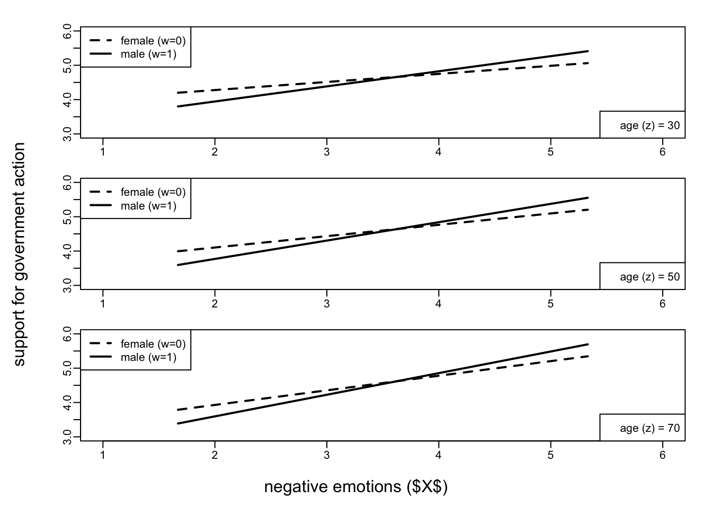
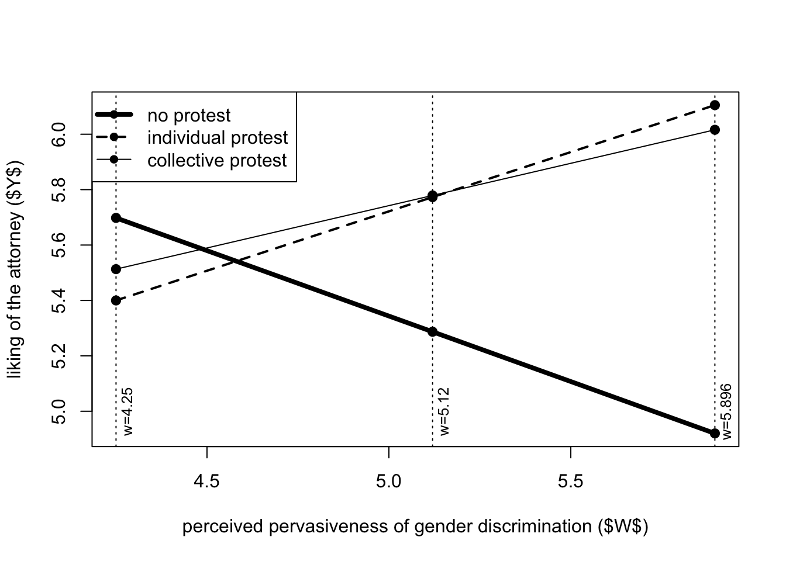
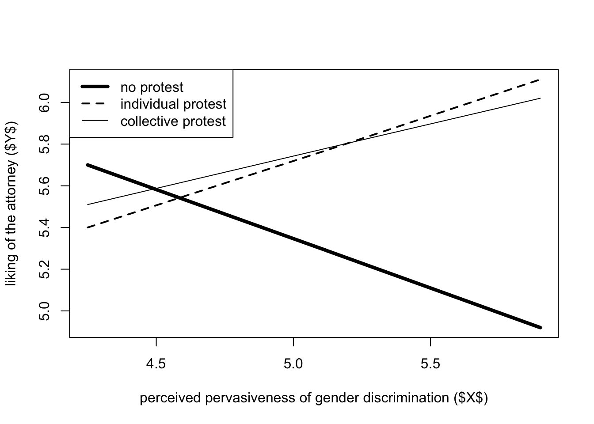

Moderation
Moderation Analysis
Learning goals
- learning the concept of moderation
- learn to fit a simple moderation model using process
- learn to interpret the output of a simple moderation model
- learn the concept of mean centering and how to mean center variables in r and process
- learn to visualize moderation effects
The concept of moderation
The effect of x on some variable y is moderated by a moderator w if its size, sign, or strength depends on w. In other terms, the effect of x on y is conditional on the values of w (conditional effect). In that case, w is said to be a moderator of x’s effect on y, or that w and x interact in their influence on y.
For instance, negative emotions (x) can be positively correlated to support for government (y), but the strength of correlation may depend on gender (w) with males showing a stronger correlation than females.
Moderation is also called interaction (i’ll use interchangeably interaction or moderation). It is expressed through the multiplication sign “x” or “*” between two or more variables (e.g: negemot x gender).
Conceptual diagram
Moderation is represented through an arrow pointing to the line connecting two variables.
Statistical diagram
The statistical diagram, which represents how a mediation model is set up in the form of an equation, shows that the interaction (i.e.: the moderation) between x and w is calculated as the multiplication of these variables (xw), and that the model includes also the coefficient of x and w alone. Indeed, the equation for a simple moderation model is y = i + b1x + b2w + b3xw, where i is the intercept and b1, b2, and b3 are the coefficients, so there are 2 antecendent variables x and w, and three coefficients x, w, and xw.
Example of moderation model: the disaster study
Let’s make an example to see how to interpret a moderation model.
In the disaster study, 211 participants read a news story about a famine in africa that was reportedly caused by severe droughts affecting the region.
source("process_r/process.r")
********************* PROCESS for R Version 4.0.1 *********************
Written by Andrew F. Hayes, Ph.D. www.afhayes.com
Documentation available in Hayes (2022). www.guilford.com/p/hayes3
***********************************************************************
PROCESS is now ready for use.
Copyright 2021 by Andrew F. Hayes ALL RIGHTS RESERVED
disaster <- haven::read_sav("data/disaster.sav")There are two experimental condition (variable frame): - for half of the participants, the story attributed the droughts to the effects of climate change (climate change condition, frame = 1); - whereas for the other half, the story provided no information suggesting that climate change was responsible for the droughts (natural causes condition, frame = 0).
After reading this story, the participants were asked a set of questions assessing how much they agreed or disagreed with various justifications for not providing aid to the victims (variable justify). Higher scores on justify reflect a stronger sense that helping out the victims was not justified.
The participants also responded to a set of questions about their beliefs about whether climate change is a real phenomenon (variable skeptic). The higher a participant’s score, the more skeptical he or she is about the reality of climate change.
Research question: does framing (x) the disaster as caused by climate change (rather than leaving the cause unspecified) influence (y) people’s justifications for not helping, and is this effect dependent on (i.e.: mediated by) a person’s skepticism about climate change?
You can download the disaster dataset from moodle.
Preliminary analysis
The group means suggest that participants who read a story attributing the droughts to climate change reported stronger justifications for withholding aid (y = 2.94) than those given no such attribution (y = 2.80).
library(tidyverse)
disaster %>%
group_by(frame) %>%
summarize(justify_average = mean(justify))# A tibble: 2 × 2
frame justify_average
<dbl+lbl> <dbl>
1 0 [naturally caused disaster] 2.80
2 1 [climate change caused disaster] 2.94But an independent groups t-test shows that this difference is not statistically significant, t(209) = -1.0413, p = 0.299. Therefore, chance is a plausible explanation for the observed difference in justifications for not helping the victims.
t.test(justify ~ frame, data = disaster)
Welch Two Sample t-test
data: justify by frame
t = -1.0413, df = 196.12, p-value = 0.299
alternative hypothesis: true difference in means between group 0 and group 1 is not equal to 0
95 percent confidence interval:
-0.3888410 0.1201029
sample estimates:
mean in group 0 mean in group 1
2.802364 2.936733 But this simple finding based on averages says nothing about whether the attribution of cause differentially affected people with different beliefs about whether climate change is real.
Regardless of whether the groups differ on average on y, in order to determine whether the effect depends on another variable, a formal test of moderation should be conducted. Evidence of an association between x and y is not required in order for x’s effect to be moderated, just as the existence of such an association says nothing about whether that association is dependent on something else.
Fit a simple moderation model with process
To fit a moderation model, add the moderator variable w and use model = 1. We use jn = 1 and plot = 1 to get useful statistics and the data necessary to visualize the model. In this case, we also add decimals = 10.2 to get numbers rounded off to two decimal places.
process(y = "justify", x = "frame", w = "skeptic",
model = 1,
jn = 1,
plot = 1,
decimals = 10.2,
data = disaster)
********************* PROCESS for R Version 4.0.1 *********************
Written by Andrew F. Hayes, Ph.D. www.afhayes.com
Documentation available in Hayes (2022). www.guilford.com/p/hayes3
***********************************************************************
Model : 1
Y : justify
X : frame
W : skeptic
Sample size: 211
***********************************************************************
Outcome Variable: justify
Model Summary:
R R-sq MSE F df1 df2 p
0.50 0.25 0.66 22.54 3.00 207.00 0.00
Model:
coeff se t p LLCI ULCI
constant 2.45 0.15 16.45 0.00 2.16 2.75
frame -0.56 0.22 -2.58 0.01 -0.99 -0.13
skeptic 0.11 0.04 2.76 0.01 0.03 0.18
Int_1 0.20 0.06 3.64 0.00 0.09 0.31
Product terms key:
Int_1 : frame x skeptic
Test(s) of highest order unconditional interaction(s):
R2-chng F df1 df2 p
X*W 0.05 13.25 1.00 207.00 0.00
----------
Focal predictor: frame (X)
Moderator: skeptic (W)
Conditional effects of the focal predictor at values of the moderator(s):
skeptic effect se t p LLCI ULCI
1.59 -0.24 0.15 -1.62 0.11 -0.54 0.05
2.80 0.00 0.12 0.01 0.99 -0.23 0.23
5.20 0.48 0.15 3.21 0.00 0.19 0.78
Moderator value(s) defining Johnson-Neyman significance region(s):
Value % below % above
1.17 6.64 93.36
3.93 67.77 32.23
Conditional effect of focal predictor at values of the moderator:
skeptic effect se t p LLCI ULCI
1.00 -0.36 0.17 -2.09 0.04 -0.70 -0.02
1.17 -0.33 0.17 -1.97 0.05 -0.65 0.00
1.42 -0.28 0.16 -1.77 0.08 -0.58 0.03
1.84 -0.19 0.14 -1.36 0.17 -0.47 0.09
2.26 -0.11 0.13 -0.84 0.40 -0.36 0.15
2.68 -0.02 0.12 -0.19 0.85 -0.26 0.21
3.11 0.06 0.11 0.55 0.58 -0.16 0.29
3.53 0.15 0.11 1.31 0.19 -0.07 0.37
3.93 0.23 0.12 1.97 0.05 0.00 0.46
3.95 0.23 0.12 1.99 0.05 0.00 0.46
4.37 0.32 0.12 2.54 0.01 0.07 0.56
4.79 0.40 0.14 2.94 0.00 0.13 0.67
5.21 0.49 0.15 3.22 0.00 0.19 0.78
5.63 0.57 0.17 3.41 0.00 0.24 0.90
6.05 0.66 0.19 3.54 0.00 0.29 1.02
6.47 0.74 0.20 3.62 0.00 0.34 1.14
6.89 0.82 0.22 3.68 0.00 0.38 1.27
7.32 0.91 0.24 3.72 0.00 0.43 1.39
7.74 0.99 0.27 3.74 0.00 0.47 1.52
8.16 1.08 0.29 3.76 0.00 0.51 1.64
8.58 1.16 0.31 3.77 0.00 0.56 1.77
9.00 1.25 0.33 3.78 0.00 0.60 1.90
Data for visualizing the conditional effect of the focal predictor:
frame skeptic justify
0.00 1.59 2.62
1.00 1.59 2.38
0.00 2.80 2.75
1.00 2.80 2.75
0.00 5.20 3.00
1.00 5.20 3.48
******************** ANALYSIS NOTES AND ERRORS ************************
Level of confidence for all confidence intervals in output: 95
W values in conditional tables are the 16th, 50th, and 84th percentiles.Output
The output can be divided in three main section:
A first section with the usual r-squared and coefficients of the model (which this time includes also the coefficients for the interaction term), as well as a global statistical test of interaction (i.e.: moderation) (test(s) of highest order unconditional interaction(s)) reporting the p-values and the r2 attributed to the interaction term;
Three tables reporting data to “probe” the interaction (conditional effects of the focal predictor at values of the moderator(s); moderator value(s) defining johnson-neyman significance region(s); conditional effect of focal predictor at values of the moderator);
data to visualize the conditional effect of the focal predictor.
process(y = "justify", x = "frame", w = "skeptic",
model = 1,
jn = 1,
plot = 1,
decimals = 10.2,
data = disaster)
********************* PROCESS for R Version 4.0.1 *********************
Written by Andrew F. Hayes, Ph.D. www.afhayes.com
Documentation available in Hayes (2022). www.guilford.com/p/hayes3
***********************************************************************
Model : 1
Y : justify
X : frame
W : skeptic
Sample size: 211
***********************************************************************
Outcome Variable: justify
Model Summary:
R R-sq MSE F df1 df2 p
0.50 0.25 0.66 22.54 3.00 207.00 0.00
Model:
coeff se t p LLCI ULCI
constant 2.45 0.15 16.45 0.00 2.16 2.75
frame -0.56 0.22 -2.58 0.01 -0.99 -0.13
skeptic 0.11 0.04 2.76 0.01 0.03 0.18
Int_1 0.20 0.06 3.64 0.00 0.09 0.31
Product terms key:
Int_1 : frame x skeptic
Test(s) of highest order unconditional interaction(s):
R2-chng F df1 df2 p
X*W 0.05 13.25 1.00 207.00 0.00
----------
Focal predictor: frame (X)
Moderator: skeptic (W)
Conditional effects of the focal predictor at values of the moderator(s):
skeptic effect se t p LLCI ULCI
1.59 -0.24 0.15 -1.62 0.11 -0.54 0.05
2.80 0.00 0.12 0.01 0.99 -0.23 0.23
5.20 0.48 0.15 3.21 0.00 0.19 0.78
Moderator value(s) defining Johnson-Neyman significance region(s):
Value % below % above
1.17 6.64 93.36
3.93 67.77 32.23
Conditional effect of focal predictor at values of the moderator:
skeptic effect se t p LLCI ULCI
1.00 -0.36 0.17 -2.09 0.04 -0.70 -0.02
1.17 -0.33 0.17 -1.97 0.05 -0.65 0.00
1.42 -0.28 0.16 -1.77 0.08 -0.58 0.03
1.84 -0.19 0.14 -1.36 0.17 -0.47 0.09
2.26 -0.11 0.13 -0.84 0.40 -0.36 0.15
2.68 -0.02 0.12 -0.19 0.85 -0.26 0.21
3.11 0.06 0.11 0.55 0.58 -0.16 0.29
3.53 0.15 0.11 1.31 0.19 -0.07 0.37
3.93 0.23 0.12 1.97 0.05 0.00 0.46
3.95 0.23 0.12 1.99 0.05 0.00 0.46
4.37 0.32 0.12 2.54 0.01 0.07 0.56
4.79 0.40 0.14 2.94 0.00 0.13 0.67
5.21 0.49 0.15 3.22 0.00 0.19 0.78
5.63 0.57 0.17 3.41 0.00 0.24 0.90
6.05 0.66 0.19 3.54 0.00 0.29 1.02
6.47 0.74 0.20 3.62 0.00 0.34 1.14
6.89 0.82 0.22 3.68 0.00 0.38 1.27
7.32 0.91 0.24 3.72 0.00 0.43 1.39
7.74 0.99 0.27 3.74 0.00 0.47 1.52
8.16 1.08 0.29 3.76 0.00 0.51 1.64
8.58 1.16 0.31 3.77 0.00 0.56 1.77
9.00 1.25 0.33 3.78 0.00 0.60 1.90
Data for visualizing the conditional effect of the focal predictor:
frame skeptic justify
0.00 1.59 2.62
1.00 1.59 2.38
0.00 2.80 2.75
1.00 2.80 2.75
0.00 5.20 3.00
1.00 5.20 3.48
******************** ANALYSIS NOTES AND ERRORS ************************
Level of confidence for all confidence intervals in output: 95
W values in conditional tables are the 16th, 50th, and 84th percentiles.–
Interpretation: model summary and coefficients
Model summary. the first section contains the summary and coefficients of the model. In the model summary (before the coefficients) we see that: - the model is statistically significant (p = 0.000). It means that the model is useful to explain the variation of y. - we also see that the r-squared of the model is 0.246, which means that the model explains about 25% (24.6%) of the variability in y.
model coefficients. next, we have the coefficients of the model. Here we have both the interaction (moderation) term, and the other coefficients. Let’s start with the interaction term (int_1), which is of particular interest: - in this case the coefficient is statistically significant (p < 0.001, 95% ci: 0.092 - 0.310). This information tells us that the the effect of x (framing) on y (strength of justifications for withholding aid) is moderated by w (participants’ climate change skepticism); - we also see that the coefficient is 0.201. The coefficient of the interaction term quantifies how the effect of x on y changes as w changes by one unit. In this case, as w (climate change skepticism) increases by one unit, the strength of justifications (y) between those told climate change was the cause and those not so told (x) “increases” by 0.201 units.
In the section test(s) of highest order unconditional interaction(s) we can read that the interaction between x and w explain 4.8% of the total variability explained by the model (r2-chng = 0.048). That is to say, by adding the interaction to the model, we account for an additional 4.8% of the variance in y (“chng” after “r2” in “r2-chng” means that the r2 changes of 0.048 if we include the moderator).
other coefficients. the other coefficients (frame and skeptic), which do not represent interaction but are the coefficients of variables which are involved in an interaction (in this case x and w), have a different interpretation from that we are used to when working in a multiple regression framework. In a multiple regression model that does not include the interaction term xw, these coefficients would respresent partial effects that quantify how much two cases that differ by one unit on a variable, are estimated to differ on y holding the other varaibles constant. Instead, in a (simple) moderation model, they represent conditional effects, which quantify how much two cases that differ by one unit on a variable, are estimated to differ on y when the other variable (x or w respectively) are zero (indeed, you can observe from the equation that in this case, i.e. When x or w is zero, the interaction term is zero as well: y = i + b1x + b2w + b3xw). In other terms: - b1 is the conditional effect of x on y when w = 0 - b2 is the conditional effect of w on y when x = 0
What should be noticed is that these coefficients don’t always have a substantive interpretation. It mainly depends whether the zero has a or not a meaning in the variables’ measurement scale.
In this case the coefficient for the variable w (skeptic = 0.11) is substantively meaningful, because 0 is meaningful in the measurement scale of x (frame). Indeed, frame = 0 is the condition where people were not told about climate change (natural condition). In this case, skeptic = 0.11 means that, given frame = 0, that is to say, among people who read a story that did not attribute the cause of the drought to climate change, people who are one-unit higher in skepticism, are estimated to be 0.11 unit higher in the strength of justifications for withholding aid.
Instead, the coefficient of frame (-0.562), as well as the statistical significant tests (p-value and confidence intervals), have no substantive meaning, since skepticism in this study is measured on a scale ranging from 1 to 9, therefore no cases measuring 0 on this variable could even exist. Such a meaning is not necessary to estimate the model and the interaction. but if you are interested in interpreting also these coefficient you can transform the data to make the zero meaningful. The procedure is called mean-centering.
process(y = "justify", x = "frame", w = "skeptic",
model = 1,
jn = 1,
plot = 1,
decimals = 10.2,
data = disaster)
********************* PROCESS for R Version 4.0.1 *********************
Written by Andrew F. Hayes, Ph.D. www.afhayes.com
Documentation available in Hayes (2022). www.guilford.com/p/hayes3
***********************************************************************
Model : 1
Y : justify
X : frame
W : skeptic
Sample size: 211
***********************************************************************
Outcome Variable: justify
Model Summary:
R R-sq MSE F df1 df2 p
0.50 0.25 0.66 22.54 3.00 207.00 0.00
Model:
coeff se t p LLCI ULCI
constant 2.45 0.15 16.45 0.00 2.16 2.75
frame -0.56 0.22 -2.58 0.01 -0.99 -0.13
skeptic 0.11 0.04 2.76 0.01 0.03 0.18
Int_1 0.20 0.06 3.64 0.00 0.09 0.31
Product terms key:
Int_1 : frame x skeptic
Test(s) of highest order unconditional interaction(s):
R2-chng F df1 df2 p
X*W 0.05 13.25 1.00 207.00 0.00
----------
Focal predictor: frame (X)
Moderator: skeptic (W)
Conditional effects of the focal predictor at values of the moderator(s):
skeptic effect se t p LLCI ULCI
1.59 -0.24 0.15 -1.62 0.11 -0.54 0.05
2.80 0.00 0.12 0.01 0.99 -0.23 0.23
5.20 0.48 0.15 3.21 0.00 0.19 0.78
Moderator value(s) defining Johnson-Neyman significance region(s):
Value % below % above
1.17 6.64 93.36
3.93 67.77 32.23
Conditional effect of focal predictor at values of the moderator:
skeptic effect se t p LLCI ULCI
1.00 -0.36 0.17 -2.09 0.04 -0.70 -0.02
1.17 -0.33 0.17 -1.97 0.05 -0.65 0.00
1.42 -0.28 0.16 -1.77 0.08 -0.58 0.03
1.84 -0.19 0.14 -1.36 0.17 -0.47 0.09
2.26 -0.11 0.13 -0.84 0.40 -0.36 0.15
2.68 -0.02 0.12 -0.19 0.85 -0.26 0.21
3.11 0.06 0.11 0.55 0.58 -0.16 0.29
3.53 0.15 0.11 1.31 0.19 -0.07 0.37
3.93 0.23 0.12 1.97 0.05 0.00 0.46
3.95 0.23 0.12 1.99 0.05 0.00 0.46
4.37 0.32 0.12 2.54 0.01 0.07 0.56
4.79 0.40 0.14 2.94 0.00 0.13 0.67
5.21 0.49 0.15 3.22 0.00 0.19 0.78
5.63 0.57 0.17 3.41 0.00 0.24 0.90
6.05 0.66 0.19 3.54 0.00 0.29 1.02
6.47 0.74 0.20 3.62 0.00 0.34 1.14
6.89 0.82 0.22 3.68 0.00 0.38 1.27
7.32 0.91 0.24 3.72 0.00 0.43 1.39
7.74 0.99 0.27 3.74 0.00 0.47 1.52
8.16 1.08 0.29 3.76 0.00 0.51 1.64
8.58 1.16 0.31 3.77 0.00 0.56 1.77
9.00 1.25 0.33 3.78 0.00 0.60 1.90
Data for visualizing the conditional effect of the focal predictor:
frame skeptic justify
0.00 1.59 2.62
1.00 1.59 2.38
0.00 2.80 2.75
1.00 2.80 2.75
0.00 5.20 3.00
1.00 5.20 3.48
******************** ANALYSIS NOTES AND ERRORS ************************
Level of confidence for all confidence intervals in output: 95
W values in conditional tables are the 16th, 50th, and 84th percentiles.Mean centering to enable interpretation of coefficients
To make a zero meaningful, it is possible to center the data. Mean-centering is obtained by subtracting the average from each data points of a variable. It is easy to see that this makes the variable average equal to zero. This solve the previous interpretation problem.
To use mean-centering in process, you can add center=1 to the process function. This will mean-center all the variables.
But sometimes we may want to mean-center just one or a few variables. In our case we can just center the skeptic variable (since this is the one that causes interpretation issues). We can do it by creating another mean-centered variable (skeptic_mc) by subtracting the average of the variable from each data point of the variable itself, and by fitting another model with the new variable.
Howvere, before manually mean-centering a variable, it is advisable to prepare a dataset without missing data. Indeed, statistical softwares (including process) fit regression models on complete cases only, that is to say, by using only those cases that have no missing data on any varaibles. Unfourtunately, procedures like mean-centering (and standardization, which is similar), depend on the cases included (the average of a variable is obtained by dividing its sum by the number of cases). Therefore, if you mean center the variable using 20 cases, but the final dataset is actually composed of only 15 cases, you are doing something wrong, since you are using an average calculated on the wrong dataset! For instance:
example <- data.frame(x = c(1, 2, 3, 4, 5, 3, 5, NA, 7),
y = c(1, 2, 3, 4, 5, NA, NA, 4, 5))
# averages calculated on the "raw" dataset
mean(example$x, NA.rm=t) # 3.75[1] NAmean(example$y, NA.rm=t) # 3.428571[1] NA# averages calculated considering only complete cases
example_final <- example[complete.cases(example),]
mean(example_final$x, NA.rm=t) # 3.666667[1] 3.666667mean(example_final$y, NA.rm=t) # 3.333333[1] 3.333333To create such a dataset (in this case there are no missing values) and mean-centering the variable:
# let's create a dataset without missing data
disaster <- disaster[complete.cases(disaster),]
# let's create a mean-centered "skeptic_mc" variable
disaster$skeptic_mc <- disaster$skeptic - mean(disaster$skeptic)Next, fit the model with the mean-centered variable.
The coefficients for the variable skepticism and for the interaction term (int_1) are unchanged, what changes is the coefficient for frame, which is now interpretable. We can see that its coefficients is 0.12: among people average on skepticism (now skeptic = 0 means skeptic = average), told climate change caused the drought (frame = 1) are 0.12 points higher in their strength of justifications for withholding aid, compared to those not so told (frame = 0). However, this coefficient is not statistically significant (p = 0.30).
process(y = "justify", x = "frame", w = "skeptic_mc",
model = 1, jn = 1, plot = 1,
decimals = 10.2,
data = disaster)
********************* PROCESS for R Version 4.0.1 *********************
Written by Andrew F. Hayes, Ph.D. www.afhayes.com
Documentation available in Hayes (2022). www.guilford.com/p/hayes3
***********************************************************************
Model : 1
Y : justify
X : frame
W : skeptic_mc
Sample size: 211
***********************************************************************
Outcome Variable: justify
Model Summary:
R R-sq MSE F df1 df2 p
0.50 0.25 0.66 22.54 3.00 207.00 0.00
Model:
coeff se t p LLCI ULCI
constant 2.81 0.08 36.20 0.00 2.65 2.96
frame 0.12 0.11 1.05 0.30 -0.10 0.34
skeptic_mc 0.11 0.04 2.76 0.01 0.03 0.18
Int_1 0.20 0.06 3.64 0.00 0.09 0.31
Product terms key:
Int_1 : frame x skeptic_mc
Test(s) of highest order unconditional interaction(s):
R2-chng F df1 df2 p
X*W 0.05 13.25 1.00 207.00 0.00
----------
Focal predictor: frame (X)
Moderator: skeptic_mc (W)
Conditional effects of the focal predictor at values of the moderator(s):
skeptic_mc effect se t p LLCI ULCI
-1.79 -0.24 0.15 -1.62 0.11 -0.54 0.05
-0.58 0.00 0.12 0.01 0.99 -0.23 0.23
1.82 0.48 0.15 3.21 0.00 0.19 0.78
Moderator value(s) defining Johnson-Neyman significance region(s):
Value % below % above
-2.21 6.64 93.36
0.56 67.77 32.23
Conditional effect of focal predictor at values of the moderator:
skeptic_mc effect se t p LLCI ULCI
-2.38 -0.36 0.17 -2.09 0.04 -0.70 -0.02
-2.21 -0.33 0.17 -1.97 0.05 -0.65 0.00
-1.96 -0.28 0.16 -1.77 0.08 -0.58 0.03
-1.54 -0.19 0.14 -1.36 0.17 -0.47 0.09
-1.11 -0.11 0.13 -0.84 0.40 -0.36 0.15
-0.69 -0.02 0.12 -0.19 0.85 -0.26 0.21
-0.27 0.06 0.11 0.55 0.58 -0.16 0.29
0.15 0.15 0.11 1.31 0.19 -0.07 0.37
0.56 0.23 0.12 1.97 0.05 0.00 0.46
0.57 0.23 0.12 1.99 0.05 0.00 0.46
0.99 0.32 0.12 2.54 0.01 0.07 0.56
1.41 0.40 0.14 2.94 0.00 0.13 0.67
1.83 0.49 0.15 3.22 0.00 0.19 0.78
2.25 0.57 0.17 3.41 0.00 0.24 0.90
2.67 0.66 0.19 3.54 0.00 0.29 1.02
3.10 0.74 0.20 3.62 0.00 0.34 1.14
3.52 0.82 0.22 3.68 0.00 0.38 1.27
3.94 0.91 0.24 3.72 0.00 0.43 1.39
4.36 0.99 0.27 3.74 0.00 0.47 1.52
4.78 1.08 0.29 3.76 0.00 0.51 1.64
5.20 1.16 0.31 3.77 0.00 0.56 1.77
5.62 1.25 0.33 3.78 0.00 0.60 1.90
Data for visualizing the conditional effect of the focal predictor:
frame skeptic_mc justify
0.00 -1.79 2.62
1.00 -1.79 2.38
0.00 -0.58 2.75
1.00 -0.58 2.75
0.00 1.82 3.00
1.00 1.82 3.48
******************** ANALYSIS NOTES AND ERRORS ************************
Level of confidence for all confidence intervals in output: 95
W values in conditional tables are the 16th, 50th, and 84th percentiles.Visualizing moderation
A picture of the model is a useful aid to interpret and report a mediation model.
The parameter plot = 1 in the process function returns a table (data for visualizing the conditional effect of the focal predictor) with values which can be used to visualize the interaction (bottom part of the output.
process(y = "justify", x = "frame", w = "skeptic",
model = 1,
jn = 1,
plot = 1,
decimals = 10.3,
data = disaster)
********************* PROCESS for R Version 4.0.1 *********************
Written by Andrew F. Hayes, Ph.D. www.afhayes.com
Documentation available in Hayes (2022). www.guilford.com/p/hayes3
***********************************************************************
Model : 1
Y : justify
X : frame
W : skeptic
Sample size: 211
***********************************************************************
Outcome Variable: justify
Model Summary:
R R-sq MSE F df1 df2 p
0.496 0.246 0.661 22.543 3.000 207.000 0.000
Model:
coeff se t p LLCI ULCI
constant 2.452 0.149 16.449 0.000 2.158 2.745
frame -0.562 0.218 -2.581 0.011 -0.992 -0.133
skeptic 0.105 0.038 2.756 0.006 0.030 0.180
Int_1 0.201 0.055 3.640 0.000 0.092 0.310
Product terms key:
Int_1 : frame x skeptic
Test(s) of highest order unconditional interaction(s):
R2-chng F df1 df2 p
X*W 0.048 13.250 1.000 207.000 0.000
----------
Focal predictor: frame (X)
Moderator: skeptic (W)
Conditional effects of the focal predictor at values of the moderator(s):
skeptic effect se t p LLCI ULCI
1.592 -0.242 0.149 -1.620 0.107 -0.537 0.052
2.800 0.001 0.117 0.007 0.994 -0.229 0.231
5.200 0.484 0.151 3.213 0.002 0.187 0.780
Moderator value(s) defining Johnson-Neyman significance region(s):
Value % below % above
1.171 6.635 93.365
3.934 67.773 32.227
Conditional effect of focal predictor at values of the moderator:
skeptic effect se t p LLCI ULCI
1.000 -0.361 0.173 -2.090 0.038 -0.702 -0.020
1.171 -0.327 0.166 -1.971 0.050 -0.654 0.000
1.421 -0.277 0.156 -1.774 0.077 -0.584 0.031
1.842 -0.192 0.141 -1.364 0.174 -0.469 0.086
2.263 -0.107 0.128 -0.837 0.403 -0.359 0.145
2.684 -0.022 0.119 -0.189 0.850 -0.256 0.211
3.105 0.062 0.113 0.550 0.583 -0.161 0.285
3.526 0.147 0.112 1.308 0.192 -0.075 0.368
3.934 0.229 0.116 1.971 0.050 0.000 0.458
3.947 0.232 0.116 1.991 0.048 0.002 0.461
4.368 0.316 0.125 2.539 0.012 0.071 0.562
4.789 0.401 0.136 2.940 0.004 0.132 0.670
5.211 0.486 0.151 3.219 0.001 0.188 0.783
5.632 0.571 0.167 3.408 0.001 0.241 0.901
6.053 0.655 0.185 3.535 0.001 0.290 1.021
6.474 0.740 0.204 3.621 0.000 0.337 1.143
6.895 0.825 0.224 3.679 0.000 0.383 1.267
7.316 0.909 0.245 3.718 0.000 0.427 1.392
7.737 0.994 0.266 3.744 0.000 0.471 1.518
8.158 1.079 0.287 3.762 0.000 0.513 1.644
8.579 1.163 0.308 3.773 0.000 0.556 1.771
9.000 1.248 0.330 3.781 0.000 0.597 1.899
Data for visualizing the conditional effect of the focal predictor:
frame skeptic justify
0.000 1.592 2.619
1.000 1.592 2.377
0.000 2.800 2.746
1.000 2.800 2.747
0.000 5.200 2.998
1.000 5.200 3.482
******************** ANALYSIS NOTES AND ERRORS ************************
Level of confidence for all confidence intervals in output: 95
W values in conditional tables are the 16th, 50th, and 84th percentiles.Some manual work is necessary to create the plots. The code below can be reused by changing the necessary values. First of all, the values of the abovementioned table have to be saved in a x, w, and y variable (in this case respectively frame, skeptic, and justify). Also the lables have to be changed accordingly, when reusing the code with other datasets.
The effect of the cause framing manipulation (x) on strength of justifications for withholding aid is reflected in the gap between the two lines, which varies with climate change skepticism (the moderator). Among those lower in skepticism, the model estimates weaker justification for those in the climate change condition than among those in the natural causes condition, but among those more skeptical, the opposite is found.
x <- c(0,1,0,1,0,1)
w <- c(1.592,1.592,2.80,2.80,5.20,5.20)
y <- c(2.619,2.377,2.746,2.747,2.998,3.482)
plot(y = y, x = w, pch = 15, col = "black",
xlab = "climate change skepticism (w)",
ylab = "negative justifications (y)")
legend.txt <- c("natural causes (x=0)", "climate change (x=1)")
legend("topleft", legend = legend.txt, lty = c(3,1), lwd = c(3,2))
lines(w[x==0], y[x==0], lwd = 3, lty = 3, col = "black")
lines(w[x==1], y[x==1], lwd = 2, lty = 1, col = "black")Probing the interaction
The above plot clearly shows that the moderation effect between x and y can be more or less strong (and statistically significant) depending on the values of the moderator.
Ascertaining whether the conditional effect of x on y is different from zero, and more or less strong, at certain specified values of w, is called probing the interaction. This is done after a general test of significance for the interaction (test(s) of highest order unconditional interaction(s)).
We have three tables to probe the interaction: - conditional effects of the focal predictor at values of the moderator(s) (pick-a-point approach); - moderator value(s) defining johnson-neyman significance region(s); - conditional effect of focal predictor at values of the moderator.
process(y = "justify", x = "frame", w = "skeptic",
model = 1,
jn = 1,
plot = 1,
decimals = 10.3,
data = disaster)
********************* PROCESS for R Version 4.0.1 *********************
Written by Andrew F. Hayes, Ph.D. www.afhayes.com
Documentation available in Hayes (2022). www.guilford.com/p/hayes3
***********************************************************************
Model : 1
Y : justify
X : frame
W : skeptic
Sample size: 211
***********************************************************************
Outcome Variable: justify
Model Summary:
R R-sq MSE F df1 df2 p
0.496 0.246 0.661 22.543 3.000 207.000 0.000
Model:
coeff se t p LLCI ULCI
constant 2.452 0.149 16.449 0.000 2.158 2.745
frame -0.562 0.218 -2.581 0.011 -0.992 -0.133
skeptic 0.105 0.038 2.756 0.006 0.030 0.180
Int_1 0.201 0.055 3.640 0.000 0.092 0.310
Product terms key:
Int_1 : frame x skeptic
Test(s) of highest order unconditional interaction(s):
R2-chng F df1 df2 p
X*W 0.048 13.250 1.000 207.000 0.000
----------
Focal predictor: frame (X)
Moderator: skeptic (W)
Conditional effects of the focal predictor at values of the moderator(s):
skeptic effect se t p LLCI ULCI
1.592 -0.242 0.149 -1.620 0.107 -0.537 0.052
2.800 0.001 0.117 0.007 0.994 -0.229 0.231
5.200 0.484 0.151 3.213 0.002 0.187 0.780
Moderator value(s) defining Johnson-Neyman significance region(s):
Value % below % above
1.171 6.635 93.365
3.934 67.773 32.227
Conditional effect of focal predictor at values of the moderator:
skeptic effect se t p LLCI ULCI
1.000 -0.361 0.173 -2.090 0.038 -0.702 -0.020
1.171 -0.327 0.166 -1.971 0.050 -0.654 0.000
1.421 -0.277 0.156 -1.774 0.077 -0.584 0.031
1.842 -0.192 0.141 -1.364 0.174 -0.469 0.086
2.263 -0.107 0.128 -0.837 0.403 -0.359 0.145
2.684 -0.022 0.119 -0.189 0.850 -0.256 0.211
3.105 0.062 0.113 0.550 0.583 -0.161 0.285
3.526 0.147 0.112 1.308 0.192 -0.075 0.368
3.934 0.229 0.116 1.971 0.050 0.000 0.458
3.947 0.232 0.116 1.991 0.048 0.002 0.461
4.368 0.316 0.125 2.539 0.012 0.071 0.562
4.789 0.401 0.136 2.940 0.004 0.132 0.670
5.211 0.486 0.151 3.219 0.001 0.188 0.783
5.632 0.571 0.167 3.408 0.001 0.241 0.901
6.053 0.655 0.185 3.535 0.001 0.290 1.021
6.474 0.740 0.204 3.621 0.000 0.337 1.143
6.895 0.825 0.224 3.679 0.000 0.383 1.267
7.316 0.909 0.245 3.718 0.000 0.427 1.392
7.737 0.994 0.266 3.744 0.000 0.471 1.518
8.158 1.079 0.287 3.762 0.000 0.513 1.644
8.579 1.163 0.308 3.773 0.000 0.556 1.771
9.000 1.248 0.330 3.781 0.000 0.597 1.899
Data for visualizing the conditional effect of the focal predictor:
frame skeptic justify
0.000 1.592 2.619
1.000 1.592 2.377
0.000 2.800 2.746
1.000 2.800 2.747
0.000 5.200 2.998
1.000 5.200 3.482
******************** ANALYSIS NOTES AND ERRORS ************************
Level of confidence for all confidence intervals in output: 95
W values in conditional tables are the 16th, 50th, and 84th percentiles.pick-a-point approach
The table conditional effects of the focal predictor at values of the moderator(s) implements the so-called pick-a-point approach to show the effect and the statistically significance of the effect among cases at different levels of the moderator (skepticism). Since the variable is continuous, specific levels of the variable are choosen. Three options are possible (usually the default option is fine, but in certain cases you may want to choose data points more meaningful based on the knowledge of the specific variable): - as default, process chooses the 16th, 50th, and 84th percentiles of the variable distribution (because they correspond to a standard deviation below the mean, the mean, and a standard deviation above the mean if w is exactly normally distributed). This allows you to roughly ascertain whether x is related to y among those “relatively low”, “moderate”, and “relatively high” on the moderator. - another option, whose interpretation is similar, is to use the parameter moments = 1, to choose values equal to a standard deviation below the sample mean, the mean, and a standard deviation above the mean. - a last option is to manually specify the desired values to operazionalize what you consider to be “relatively low”, “moderate”, and “relatively high” values on the moderator. You can do so by adding the wmodval option (for instance, wmodval = c(10, 30, 50)) with attention not to use values of the moderator that are outside of the bounds of measurement or observation.
From this table we can see that x (framing of the disaster) has a significant effect on y (justifications for withholding assistance) only on people higher in skepticism (w), while no significan effect can be found among people low to moderate in climate change skepticism.
johnson-neyman significance region(s) and conditional effect of focal predictor at values of the moderator
The table moderator value(s) defining johnson-neyman significance region(s) inform you about the region of the moderator where x shows a statistically significant effect on y. This is done by applying the so-called johnson-neyman tecnique, which can be applied only when w is a continuous variable.
The table give one or two values (or nothing), which can be interpreted as the values of the moderator above or below which x has a significant effect on y. If no value is given, that means the effect of x on y is statistically significant across the entire range of the moderator, or not statistically significant anywhere. To ease the interpretation, process slices the distribution of w into 21 arbitrary values in the conditional effect of focal predictor at values of the moderator. Reading both the tables we can see that x has a significant effect on y for values of w below 1.171 and above 3.934 (w ≤ 1.171 and w ≥ 3.934).
It is furthermore possible to plot the significant region by exploiting the data in the table conditional effect of focal predictor at values of the moderator (you can reuse the code with other outputs by replacing the necessary data). The region of significance is depicted as the values of w corresponding to points where a conditional effect of 0 is outside of the 95% confidence band (which are represented by the dotted lines).
skeptic <- c(1,1.171,1.4,1.8,2.2,2.6,3,3.4,3.8,3.934,4.2,
4.6,5,5.4,5.8,6.2,6.6,7,7.4,7.8,8.2,8.6,9)
effect <- c(-.361,-.327,-.281,-.200,-.120,-.039,.041,.122,
.202,.229,.282,.363,.443,.524,.604,.685,.765,
.846,.926,1.007,1.087,1.168,1.248)
llci <- c(-.702,-.654,-.589,-.481,-.376,-.276,-.184,-.099,
-.024,0,.044,.105,.161,.212,.261,.307,.351,.394,
.436,.477,.518,.558,.597)
ulci <- c(-.021,0,.028,.080,.136,.197,.266,.343,.428,.458,
.521,.621,.726,.836,.948,1.063,1.180,1.298,1.417,
1.537,1.657,1.778,1.899)
plot(x = skeptic, y = effect, type = "l", pch = 19,
ylim = c(-1,1.5), xlim = c(1,6), lwd = 3,
ylab = "conditional effect of disaster frame",
xlab = "climate change skepticism (w)")
points(skeptic, llci, lwd = 2, lty = 2, type = "l")
points(skeptic, ulci, lwd = 2, lty = 2, type = "l")
abline(h = 0, untf = FALSE, lty = 3, lwd = 1)
abline(v = 1.171, untf = FALSE, lty = 3, lwd = 1)
abline(v = 3.934, untf = FALSE, lty = 3, lwd = 1)
text(1.171, -1, "1.171", cex = 0.8)
text(3.934, -1, "3.934", cex=0.8)–
Moderation with continuous and categorical variables and more than one moderator
Learning objectives
Learning objectives of unit 3b consist in learning to fit and interpret:
- models with a dichotomous moderator
- models with a continuous moderator and independent variable
- models with more than one moderator: additive multiple moderation and moderated moreation.
Dichotomous moderator and continuous x
We fitted a moderation model with a dichotomous independent variable (frame) and a continuous mediator (skeptic). The identical procedure can be used with other types of variables. It is also possible to control for covariates.
An example of dichotomous moderator and continuous independent variable can be made with the same dataset used in the previous example, by using the dichotomous variable frame as moderator (instead of skeptic) and the variable skeptic as independent variable (instead of frame).
The model coefficients are the same as the previous ones. Indeed, from a mathematical perspective, nothing has changed.
Anyway, the second part of the outputs (from conditional effects of the focal predictor at values of the moderator(s)) is different, since you are using different variables as focal antecendent (x). Also the visualization data is partly different.
process(y = "justify", x = "skeptic", w = "frame",
model = 1, plot = 1,
decimals = 10.2,
data = disaster)
********************* PROCESS for R Version 4.0.1 *********************
Written by Andrew F. Hayes, Ph.D. www.afhayes.com
Documentation available in Hayes (2022). www.guilford.com/p/hayes3
***********************************************************************
Model : 1
Y : justify
X : skeptic
W : frame
Sample size: 211
***********************************************************************
Outcome Variable: justify
Model Summary:
R R-sq MSE F df1 df2 p
0.50 0.25 0.66 22.54 3.00 207.00 0.00
Model:
coeff se t p LLCI ULCI
constant 2.45 0.15 16.45 0.00 2.16 2.75
skeptic 0.11 0.04 2.76 0.01 0.03 0.18
frame -0.56 0.22 -2.58 0.01 -0.99 -0.13
Int_1 0.20 0.06 3.64 0.00 0.09 0.31
Product terms key:
Int_1 : skeptic x frame
Test(s) of highest order unconditional interaction(s):
R2-chng F df1 df2 p
X*W 0.05 13.25 1.00 207.00 0.00
----------
Focal predictor: skeptic (X)
Moderator: frame (W)
Conditional effects of the focal predictor at values of the moderator(s):
frame effect se t p LLCI ULCI
0.00 0.11 0.04 2.76 0.01 0.03 0.18
1.00 0.31 0.04 7.65 0.00 0.23 0.39
Data for visualizing the conditional effect of the focal predictor:
skeptic frame justify
1.59 0.00 2.62
2.80 0.00 2.75
5.20 0.00 3.00
1.59 1.00 2.38
2.80 1.00 2.75
5.20 1.00 3.48
******************** ANALYSIS NOTES AND ERRORS ************************
Level of confidence for all confidence intervals in output: 95- first, in the code we can omit jn = 1, since this is the parameter to request the johnson-neyman significance region(s), which only works with continuous moderators. Also, there is no table with the 21 data points, since it is related to the results of the johnson-neyman tecnique;
- the table conditional effects of the focal predictor at values of the moderator(s) (pick-a-point approach) does not show the 16th, 50th, and 84th percentiles of the variable distribution, since they do not exist for categorical variables, but shows only the two possible values of the variable (frame = 0 and frame = 1).
- the substantive interpretation is: between two people told nothing about the cause of the drought (frame=0), one-unit increase in climate change skepticism (the “focal predictor”), is estimated to increase the strength of justifications for withholding aid (y) 0.105 units. But among those told climate change was the cause of the drought, the person one unit higher in climate change skepticism is estimated to be 0.306 units higher in justifications for withholding aid. These two conditional effects correspond to the slopes of the lines in the plot.
- also the visualization data are different, since the order of the variable is different (the same code can be used to create the plot, but the variable order should be changed. The same code below can be used for plots of models with same structure: dichotomous w and continuous x).
x <- c(1.59, 2.80, 5.20, 1.59, 2.80, 5.20)
w <- c(0.00, 0.00, 0.00, 1.00, 1.00, 1.00)
y <- c(2.62, 2.75, 3.00, 2.38, 2.75, 3.48)
plot(y = y, x = x, pch = 15, col = "black",
xlab = "climate change skepticism (x)",
ylab = "strength of justifications for withholding aid (y)")
legend.txt <- c("natural causes (w=0)", "climate change (w=1)")
legend("topleft", legend = legend.txt, lty = c(3,1), lwd = c(3,2))
lines(x[w==0], y[w==0], lwd = 3, lty = 3, col = "black")
lines(x[w==1], y[w==1], lwd = 2, lty = 1, col = "black")–
Continuous moderator and continuous x
An example of continuous moderator and x variable can be made by using the dataset glbwarm, using age as moderator and negemot as independent variable. We also add covariates.
In this case, it makes sense to specify different values from the 16th, 50th, and 84th percentiles of the distribution of age to probe the interaction. We use 30, 50, 70 with the wmodval option. We also use jn = 1 since the moderator is continuous.
glbwarm <- haven::read_sav("data/glbwarm.sav")
process(y = "govact", x = "negemot", w = "age",
cov = c("posemot", "ideology", "gender"),
model = 1,
jn = 1,
plot = 1,
wmodval = c(30,50,70),
decimals = 10.3,
data = glbwarm)
********************* PROCESS for R Version 4.0.1 *********************
Written by Andrew F. Hayes, Ph.D. www.afhayes.com
Documentation available in Hayes (2022). www.guilford.com/p/hayes3
***********************************************************************
Model : 1
Y : govact
X : negemot
W : age
Covariates:
posemot ideology gender
Sample size: 815
***********************************************************************
Outcome Variable: govact
Model Summary:
R R-sq MSE F df1 df2 p
0.633 0.401 1.117 90.080 6.000 808.000 0.000
Model:
coeff se t p LLCI ULCI
constant 5.174 0.338 15.287 0.000 4.510 5.838
negemot 0.120 0.083 1.449 0.148 -0.042 0.282
age -0.024 0.006 -3.993 0.000 -0.036 -0.012
Int_1 0.006 0.002 4.104 0.000 0.003 0.009
posemot -0.021 0.028 -0.768 0.443 -0.076 0.033
ideology -0.212 0.027 -7.883 0.000 -0.264 -0.159
gender -0.011 0.076 -0.147 0.883 -0.160 0.138
Product terms key:
Int_1 : negemot x age
Test(s) of highest order unconditional interaction(s):
R2-chng F df1 df2 p
X*W 0.012 16.839 1.000 808.000 0.000
----------
Focal predictor: negemot (X)
Moderator: age (W)
Conditional effects of the focal predictor at values of the moderator(s):
age effect se t p LLCI ULCI
30.000 0.310 0.041 7.488 0.000 0.228 0.391
50.000 0.436 0.026 16.644 0.000 0.385 0.488
70.000 0.563 0.040 14.209 0.000 0.485 0.640
There are no statistical significance transition points within the observed
range of the moderator found using the Johnson-Neyman method.
Conditional effect of focal predictor at values of the moderator:
age effect se t p LLCI ULCI
17.000 0.227 0.058 3.900 0.000 0.113 0.342
20.333 0.248 0.054 4.623 0.000 0.143 0.354
23.667 0.269 0.049 5.466 0.000 0.173 0.366
27.000 0.291 0.045 6.454 0.000 0.202 0.379
30.333 0.312 0.041 7.612 0.000 0.231 0.392
33.667 0.333 0.037 8.961 0.000 0.260 0.406
37.000 0.354 0.034 10.505 0.000 0.288 0.420
40.333 0.375 0.031 12.210 0.000 0.315 0.435
43.667 0.396 0.028 13.965 0.000 0.340 0.452
47.000 0.417 0.027 15.562 0.000 0.365 0.470
50.333 0.438 0.026 16.736 0.000 0.387 0.490
53.667 0.459 0.027 17.291 0.000 0.407 0.511
57.000 0.480 0.028 17.217 0.000 0.426 0.535
60.333 0.502 0.030 16.676 0.000 0.443 0.561
63.667 0.523 0.033 15.880 0.000 0.458 0.587
67.000 0.544 0.036 14.995 0.000 0.473 0.615
70.333 0.565 0.040 14.124 0.000 0.486 0.643
73.667 0.586 0.044 13.315 0.000 0.500 0.672
77.000 0.607 0.048 12.584 0.000 0.512 0.702
80.333 0.628 0.053 11.935 0.000 0.525 0.731
83.667 0.649 0.057 11.360 0.000 0.537 0.761
87.000 0.670 0.062 10.853 0.000 0.549 0.792
Data for visualizing the conditional effect of the focal predictor:
negemot age govact
1.670 30.000 4.038
3.670 30.000 4.657
5.330 30.000 5.171
1.670 50.000 3.772
3.670 50.000 4.644
5.330 50.000 5.368
1.670 70.000 3.506
3.670 70.000 4.631
5.330 70.000 5.565
******************** ANALYSIS NOTES AND ERRORS ************************
Level of confidence for all confidence intervals in output: 95In this case we have covariates we use as statistical controls. To control for these covariates they are held constant (at their average value). In this example the averages of these variables are: - posemot = 3.132, ideology = 4.083, and gender = 0.488, - and their coefficients (from the first table): posemot = −0.021, ideology = −0.212, and gender = − 0.011 - so, considering coefficients and averages, the coefficients in the table can be read as: −0.021(3.132) −0.212(4.083) − 0.011(0.488).
Anyway, usually we are not interested in interpreting the covariates, we just want to held them constant. So what is important is to know that they are held constant at their average value. The values plugged into the model for the covariates end up merely adding or subtracting from the regression constant, depending on the signs of the regression coefficients for the covariates. This will have the effect of moving the plot up or down the vertical axis (you can use the sample mean for dichotomous covariates. If a dichotomous variable is coded zero and one, then the sample mean is the proportion of the cases in the group coded one. But using the mean works regardless of how the groups are coded, even if the mean is itself meaningless).
In this case the johnson-neyman analysis returns that there are no statistical significance transition points within the observed range of the moderator found using the johnson-neyman method. Indeed, by looking at the next 21 point table, we see that x has a significant effect on y over the entire range of w.
It is possible the data in the table data for visualizing the conditional effect of the focal predictor to plot the interaction effect (“wmarker” and “pch” are used to specify the shape of the points). (in a similar way as before, it can be visualized the statistical significance of the moderating effect (in this case is not very useful, since the effect is always significant).
process(y = "govact", x = "negemot", w = "gender",
cov = c("posemot", "ideology", "age"),
model = 1,
jn = 1,
plot = 1,
wmodval = c(30,50,70),
decimals = 10.3,
data = glbwarm)
********************* PROCESS for R Version 4.0.1 *********************
Written by Andrew F. Hayes, Ph.D. www.afhayes.com
Documentation available in Hayes (2022). www.guilford.com/p/hayes3
***********************************************************************
Model : 1
Y : govact
X : negemot
W : gender
Covariates:
posemot ideology age
Sample size: 815
***********************************************************************
Outcome Variable: govact
Model Summary:
R R-sq MSE F df1 df2 p
0.637 0.406 1.107 92.172 6.000 808.000 0.000
Model:
coeff se t p LLCI ULCI
constant 4.507 0.221 20.365 0.000 4.072 4.941
negemot 0.315 0.036 8.638 0.000 0.243 0.386
gender -0.873 0.190 -4.595 0.000 -1.246 -0.500
Int_1 0.242 0.049 4.951 0.000 0.146 0.337
posemot -0.028 0.028 -0.995 0.320 -0.082 0.027
ideology -0.211 0.027 -7.889 0.000 -0.263 -0.158
age -0.001 0.002 -0.554 0.580 -0.006 0.003
Product terms key:
Int_1 : negemot x gender
Test(s) of highest order unconditional interaction(s):
R2-chng F df1 df2 p
X*W 0.018 24.516 1.000 808.000 0.000
----------
Focal predictor: negemot (X)
Moderator: gender (W)
Conditional effects of the focal predictor at values of the moderator(s):
gender effect se t p LLCI ULCI
30.000 7.561 1.438 5.257 0.000 4.738 10.384
50.000 12.391 2.414 5.134 0.000 7.653 17.129
70.000 17.222 3.389 5.081 0.000 10.569 23.875
Data for visualizing the conditional effect of the focal predictor:
negemot gender govact
1.670 30.000 -10.077
3.670 30.000 5.045
5.330 30.000 17.595
1.670 50.000 -19.475
3.670 50.000 5.307
5.330 50.000 25.877
1.670 70.000 -28.874
3.670 70.000 5.570
5.330 70.000 34.158
******************** ANALYSIS NOTES AND ERRORS ************************
Level of confidence for all confidence intervals in output: 95x <- c(1.67,3.67,5.33,1.67,3.67,5.33,1.67,3.67,5.33)
w <- c(30,30,30,50,50,50,70,70,70)
y <- c(4.038,4.657,5.171,3.772,4.644,5.362,3.506,4.631,5.565)
wmarker <- c(15,15,15,16,16,16,17,17,17)
plot(y = y, x = x, cex = 1.2, pch = wmarker,
xlab = "negative emotions (w)",
ylab = "support for government action (y)")
legend.txt <- c("30 years old","50 years old", "70 years old")
legend("topleft", legend = legend.txt,
cex = 1, lty = c(1,3,6), lwd = c(2,3,2),
pch = c(15,16,17))
lines(x[w==30], y[w==30], lwd = 2, col = "black")
lines(x[w==50], y[w==50], lwd = 3, lty = 3, col = "black")
lines(x[w==70], y[w==70], lwd = 2, lty = 6, col = "black")Additive multiple moderation
An additive multiple moderation model uses two moderators to moderate the same relation.
To fit an additive multiple moderation model just add two moderators “w” and “z” and specify model = 2. If you want to manually specify values to probe the interaction, use zmodval or wmodval depending on the moderator you are considering. We omit jn=1 since the johnson-neyman significance region(s) is not provided for this kind of model.
process(y = "govact", x = "negemot", w = "gender", z = "age",
cov = c("posemot", "ideology"),
model = 2,
plot = 1,
zmodval = c(30,50,70),
decimals = 10.3,
data = glbwarm)
********************* PROCESS for R Version 4.0.1 *********************
Written by Andrew F. Hayes, Ph.D. www.afhayes.com
Documentation available in Hayes (2022). www.guilford.com/p/hayes3
***********************************************************************
Model : 2
Y : govact
X : negemot
W : gender
Z : age
Covariates:
posemot ideology
Sample size: 815
***********************************************************************
Outcome Variable: govact
Model Summary:
R R-sq MSE F df1 df2 p
0.643 0.413 1.096 81.092 7.000 807.000 0.000
Model:
coeff se t p LLCI ULCI
constant 5.272 0.336 15.686 0.000 4.612 5.931
negemot 0.093 0.082 1.135 0.257 -0.068 0.254
gender -0.742 0.194 -3.822 0.000 -1.123 -0.361
Int_1 0.204 0.050 4.084 0.000 0.106 0.303
age -0.018 0.006 -2.997 0.003 -0.030 -0.006
Int_2 0.005 0.002 3.013 0.003 0.002 0.008
posemot -0.023 0.028 -0.849 0.396 -0.078 0.031
ideology -0.207 0.027 -7.772 0.000 -0.259 -0.155
Product terms key:
Int_1 : negemot x gender
Int_2 : negemot x age
Test(s) of highest order unconditional interaction(s):
R2-chng F df1 df2 p
X*W 0.012 16.676 1.000 807.000 0.000
X*Z 0.007 9.080 1.000 807.000 0.003
BOTH 0.025 16.921 2.000 807.000 0.000
----------
Focal predictor: negemot (X)
Moderator: gender (W)
Moderator: age (Z)
Conditional effects of the focal predictor at values of the moderator(s):
gender age effect se t p LLCI
0.000 30.000 0.236 0.045 5.262 0.000 0.148
0.000 50.000 0.331 0.037 9.024 0.000 0.259
0.000 70.000 0.426 0.052 8.240 0.000 0.324
1.000 30.000 0.440 0.052 8.472 0.000 0.338
1.000 50.000 0.535 0.035 15.072 0.000 0.465
1.000 70.000 0.630 0.043 14.808 0.000 0.547
ULCI
0.323
0.402
0.527
0.542
0.605
0.714
Data for visualizing the conditional effect of the focal predictor:
negemot gender age govact
1.670 0.000 30.000 4.200
3.670 0.000 30.000 4.671
5.330 0.000 30.000 5.062
1.670 0.000 50.000 3.994
3.670 0.000 50.000 4.655
5.330 0.000 50.000 5.204
1.670 0.000 70.000 3.788
3.670 0.000 70.000 4.639
5.330 0.000 70.000 5.346
1.670 1.000 30.000 3.800
3.670 1.000 30.000 4.680
5.330 1.000 30.000 5.411
1.670 1.000 50.000 3.594
3.670 1.000 50.000 4.664
5.330 1.000 50.000 5.552
1.670 1.000 70.000 3.388
3.670 1.000 70.000 4.648
5.330 1.000 70.000 5.694
******************** ANALYSIS NOTES AND ERRORS ************************
Level of confidence for all confidence intervals in output: 95Two moderators means that the output includes two interaction coefficients (int_1 and int_2). In the table product terms key you find the legend to interpret they meaning.
- int_1 is xw and quantifies how much the conditional effect of x on y changes as w changes by one unit, holding z constant;
- int_2 is xz and estimates how much the conditional effect of x on y changes as z (age) changes by one unit, holding w constant.
For instance, considering the interpretation of int_2: as age increases by one year, the conditional effect of negative emotions on support for government action increases by 0.005 points (or alternatively: among two hypothetical groups of people who differ by 1 year in age, the conditional effect of negative emotions on support for government action is 0.005 points larger in the older group).
As before, tests of significance for the interaction terms answer the question as to whether w moderates x’s effect and whether z moderates x’s effect, respectively. In this case both are statistically different from zero (p = .000 and p = 0.003), meaning both gender and age function as moderators of the effect of negative emotions on support for government action.
From the test(s) of highest order unconditional interaction(s) we learn that the moderation of the effect of negative emotions by gender (w) uniquely accounts for 1.21% of the variance (p < 0.001), whereas the moderation by age (z) uniquely accounts for 0.66% of the variance (p = 0.003).
From the table conditional effects of the focal predictor at values of the moderator(s) it can be seen that: - the effect of negative emotions on support for government action is consistently positive and statistically significant for both males and females of 30, 50, or 70 years of age. - the effect of negative emotions on support for government action is stronger for men (gender = 1) than women (gender = 0). - more exactly, the difference between males and females is 0.204 (see the coefficient int_1 = 0.204) which is also the difference beween the male and female values reported in the table “conditional effects of the focal predictor at values of the moderator(s)” (0.440 - 0.236 = 0.204; 0.535 - 0.331 = 0.204; 0.630 - 0.426 = 0.204. - notice that this observation highlights an important characteristic of this kind of model: the two moderators exert a combined effect on the x->y relation, but do not interact with each other. regardless of which age you consider, the difference between males and females is always 0.204. This may be a limitation or not, depending on your theoretical framework. This “limitation” is overcome by the mediated moderation models (described in the next section). - also, the effect of negative emotions on support for government action is stronger for older people (int_2 = 0.005). - as said above, int_2 is the coefficient of this interaction and estimates how much the conditional effect of x on y changes as z (age) changes by one unit, holding w constant. Thus, regardless gender, one-unit change in z (i.e., + 1 year) is associated with a +0.005 points in y (support for government). This means there is a linear increase in support for government that depends on age. - for instance: among two hypothetical groups of people who differ by 1 year in age, the conditional effect of negative emotions on support for government action is 0.005 larger in the Older group. For two groups 10 years apart, the difference in the effect is 10*0.0005 = 0.05, and so forth (this difference is invariant to where you start on the distribution of age, a constraint built into this model).
The plot of the model clearly shows that the difference between gender does not depend on age: the gap between the lines is always the same (.204) at different ages. At the same time, the visualization makes it clear the positive effect of these moderators (it may be clearer in the plot used in the book at page 328: in particular with reference to the age variable, the lines are “steeper” for older people).
par(mfrow = c(3, 1))
par(mar = c(3, 4, 0, 0), oma = c(2, 2, 2, 2))
par(mgp = c(5, 0.5, 0))
x <- c(1.67, 3.67, 5.33, 1.67, 3.67, 5.33)
w <- c(0, 0, 0, 1, 1, 1)
yage30 <- c(4.2003, 4.6714, 5.0624, 3.800, 4.6801, 5.4106)
yage50 <- c(3.9943, 4.6554, 5.2041, 3.5941, 4.6641, 5.5523)
yage70 <- c(3.7883, 4.6394, 5.3458, 3.3881, 4.6481, 5.6940)
legend.txt <- c("female (w=0)", "male (w=1)")
for (i in 1:3) {
if (i == 1)
{
y <- yage30
legend2.txt <- c("age (z) = 30")
}
if (i == 2)
{
y <- yage50
legend2.txt <- c("age (z) = 50")
}
if (i == 3)
{
y <- yage70
legend2.txt <- c("age (z) = 70")
}
plot(
y = y,
x = x,
col = "white",
ylim = c(3, 6),
cex = 1.5,
xlim = c(1, 6),
tcl = -0.5
)
lines(x[w == 0], y[w == 0], lwd = 2, lty = 2)
lines(x[w == 1], y[w == 1], lwd = 2, lty = 1)
legend("topleft",
legend = legend.txt,
lwd = 2,
lty = c(2, 1))
legend("bottomright", legend = legend2.txt)
}
mtext("negative emotions (x)", side = 1, outer = TRUE)
mtext("support for government action",
side = 2,
outer = TRUE)
–
Moderated moderation
In moderated moderation models there are two moderators w and z that interact. It is also known as three-way interaction (it means that x, w, and z interact).
The characteristic of this model is that it allows the moderation of x’s effect on y by w to be dependent on z.
We fit this model using the glbwarm dataset. We measure the relation between negative emotion (x) and support for government (y), conditionally to two interacting moderators: gender (w) and age (z). In other terms, this model allows us to understand if the relation between negative emotion (x) and support for government (y) changes (in sign or strenght) between males and females (w) at different ages (z).
Moderated moderation models are fitted in process by specifying model = 3. In this case “w” is the primary moderator, and “z” the secondary moderator (the moderator that moderates w). In this model we can also calculate the johnson-neyman significance region(s) by adding jn = 1.
process(y = "govact", x = "negemot", w = "gender", z = "age",
cov = c("posemot", "ideology"),
model = 3,
jn = 1,
plot = 1,
zmodval = c(30,50,70),
decimals = 10.3,
data = glbwarm)
********************* PROCESS for R Version 4.0.1 *********************
Written by Andrew F. Hayes, Ph.D. www.afhayes.com
Documentation available in Hayes (2022). www.guilford.com/p/hayes3
***********************************************************************
Model : 3
Y : govact
X : negemot
W : gender
Z : age
Covariates:
posemot ideology
Sample size: 815
***********************************************************************
Outcome Variable: govact
Model Summary:
R R-sq MSE F df1 df2 p
0.645 0.416 1.093 63.765 9.000 805.000 0.000
Model:
coeff se t p LLCI ULCI
constant 4.559 0.485 9.401 0.000 3.607 5.512
negemot 0.273 0.118 2.311 0.021 0.041 0.505
gender 0.529 0.646 0.819 0.413 -0.740 1.798
Int_1 -0.131 0.167 -0.781 0.435 -0.460 0.198
age -0.003 0.009 -0.356 0.722 -0.022 0.015
Int_2 0.001 0.002 0.381 0.704 -0.004 0.006
Int_3 -0.025 0.012 -2.059 0.040 -0.049 -0.001
Int_4 0.007 0.003 2.096 0.036 0.000 0.013
posemot -0.021 0.028 -0.745 0.456 -0.075 0.034
ideology -0.205 0.027 -7.726 0.000 -0.258 -0.153
Product terms key:
Int_1 : negemot x gender
Int_2 : negemot x age
Int_3 : gender x age
Int_4 : negemot x gender x age
Test(s) of highest order unconditional interaction(s):
R2-chng F df1 df2 p
X*W*Z 0.003 4.393 1.000 805.000 0.036
----------
Focal predictor: negemot (X)
Moderator: gender (W)
Moderator: age (Z)
Test of conditional X*W interaction at value(s) of Z:
age effect F df1 df2 p
30.000 0.070 0.730 1.000 805.000 0.393
50.000 0.203 16.505 1.000 805.000 0.000
70.000 0.337 17.462 1.000 805.000 0.000
Conditional effects of the focal predictor at values of the moderator(s):
gender age effect se t p LLCI
0.000 30.000 0.300 0.054 5.545 0.000 0.194
0.000 50.000 0.319 0.037 8.600 0.000 0.246
0.000 70.000 0.337 0.067 5.060 0.000 0.206
1.000 30.000 0.370 0.062 5.968 0.000 0.248
1.000 50.000 0.522 0.036 14.488 0.000 0.451
1.000 70.000 0.674 0.048 14.180 0.000 0.580
ULCI
0.407
0.391
0.468
0.492
0.592
0.767
Moderator value(s) defining Johnson-Neyman significance region(s):
Value % below % above
38.114 28.221 71.779
Conditional X*W interaction at values of the moderator Z:
age effect se t p LLCI ULCI
17.000 -0.017 0.117 -0.148 0.883 -0.247 0.212
20.500 0.006 0.107 0.057 0.954 -0.204 0.216
24.000 0.030 0.097 0.303 0.762 -0.161 0.220
27.500 0.053 0.088 0.602 0.547 -0.120 0.225
31.000 0.076 0.079 0.966 0.334 -0.079 0.231
34.500 0.100 0.071 1.410 0.159 -0.039 0.238
38.000 0.123 0.063 1.944 0.052 -0.001 0.247
38.114 0.124 0.063 1.963 0.050 -0.000 0.248
41.500 0.146 0.057 2.563 0.011 0.034 0.258
45.000 0.170 0.053 3.225 0.001 0.066 0.273
48.500 0.193 0.050 3.841 0.000 0.094 0.292
52.000 0.216 0.050 4.301 0.000 0.118 0.315
55.500 0.240 0.053 4.542 0.000 0.136 0.344
59.000 0.263 0.057 4.588 0.000 0.151 0.376
62.500 0.287 0.064 4.507 0.000 0.162 0.411
66.000 0.310 0.071 4.365 0.000 0.171 0.449
69.500 0.333 0.079 4.202 0.000 0.178 0.489
73.000 0.357 0.088 4.041 0.000 0.183 0.530
76.500 0.380 0.098 3.892 0.000 0.188 0.572
80.000 0.403 0.107 3.757 0.000 0.193 0.614
83.500 0.427 0.117 3.637 0.000 0.196 0.657
87.000 0.450 0.128 3.530 0.000 0.200 0.701
Data for visualizing the conditional effect of the focal predictor:
negemot gender age govact
1.670 0.000 30.000 4.056
3.670 0.000 30.000 4.657
5.330 0.000 30.000 5.155
1.670 0.000 50.000 4.019
3.670 0.000 50.000 4.656
5.330 0.000 50.000 5.185
1.670 0.000 70.000 3.982
3.670 0.000 70.000 4.656
5.330 0.000 70.000 5.215
1.670 1.000 30.000 3.942
3.670 1.000 30.000 4.682
5.330 1.000 30.000 5.296
1.670 1.000 50.000 3.622
3.670 1.000 50.000 4.665
5.330 1.000 50.000 5.531
1.670 1.000 70.000 3.302
3.670 1.000 70.000 4.649
5.330 1.000 70.000 5.767
******************** ANALYSIS NOTES AND ERRORS ************************
Level of confidence for all confidence intervals in output: 95The output of the model includes single variable coefficients and four interaction coefficients that can be interpreted with references to the legend “product terms key”.
In the book you can find a detailed description of the equation for this model (and also for all the other models) which is just the written form of the above diagram:
\[\hat y = i_y + b_1x + b_2w + b_3z + b_4xw + b_5xz + b_6wz + b_7xwz\]
Based on the general equation, we can plug the model coefficients into the equation, keeping in mind that our model has the following varaibles:
- x = “negemot”
- w = “gender”
- z = “age”
\[\hat y = 4.559 + 0.273x + 0.529w + -0.003z -0.131xw + 0.001xz -0.025wz + 0.007xwz\]
Also in this case the coefficients estimate conditional effects, that is, the effect of the variable when the other ones are set to zero (and not when they are held constant, as in a generic multiple regression model):
- b1 estimates the effect of x on y when both w and z are zero (indeed you can see that in this particular condition all the coefficients other than b1 and the intercept are deleted from the equation, since they become zero);
- b2 estimates the effect of w on y when both x and z are equal to zero (for the same reason above);
- and b3 estimates the effect of z on y when both x and w are equal to zero (for the same reason);
- b4 estimates the conditional interaction between x and w when z = 0 (as in the previous model);
- b5 quantifies the conditional interaction between x and z when w = 0;
- and b6 estimates the conditional interaction betweenw and z when x = 0.
Since this is a model used to test moderated moderation, the significance test (table test(s) of highest order unconditional interaction(s) is about the moderated moderation term xwz (int_4). In this case it is significant (p = 0.036), and explains 0.3% of the variance in support for government action.
The table **test of conditional x*w interaction at value(s) of z** shows at which values of z (age, secondary moderator) the interaction between x (negative emotion) and w (gender, primary moderator) has a significant effect on y:
- in this case, at a “relatively low” age (age = 30), the relation between negative emotion and support for government is not moderated by gender (i.e.: when considering the relation between x and y at this age, there is no significant difference between males and females: effect: 0.070; p-value = 0.393).
- among 50- and 70-year olds, the relation between x and y is significantly moderated by gender (i.e., there are significant differences between males and females at these ages, 0.203 and 0.337 respectively, p-value = 0.000).
Also notice from the table below (conditional effects of the focal predictor at values of the moderator(s)), that these estimates of the conditional xw interaction (i.e., 0.070, 0.203, and 0.337) are just the difference between the effects in males and females (gender w, primary moderator) conditionally to the three choosen ages (age z, secondary moderator):
- 0.070 = 0.370 - 0.300
- 0.203 = 0.522 - 0.319
- 0.337 = 0.674 - 0.337
This is also clear in the plot (based on the data in the output): the effect of negative emotions on support for government action is consistently positive (as negative emotions increase, the support for government also increases), but there is a larger difference between men and women among those who are older (as shown by the gap between the lines).
Notice the difference with the previous additive multiple moderator model (and plot): in that case, the gap between males and females was always the same. Here, it changes conditionally on the age (the secondary moderator).
par(mfrow = c(3, 1))
par(mar = c(3, 4, 0, 0), oma = c(2, 2, 2, 2))
par(mgp = c(5, 0.5, 0))
x <- c(1.67, 3.67, 5.33, 1.67, 3.67, 5.33)
w <- c(0, 0, 0, 1, 1, 1)
yage30 <- c(4.0561, 4.6566, 5.1551, 3.9422, 4.6819, 5.2959)
yage50 <- c(4.0190, 4.6562, 5.1850, 3.6220, 4.6654, 5.5314)
yage70 <- c(3.9820, 4.6557, 5.2149, 3.3017, 4.6489, 5.7670)
legend.txt <- c("female (w=0)", "male (w=1)")
for (i in 1:3) {
if (i == 1)
{
y <- yage30
legend2.txt <- c("age (z) = 30")
}
if (i == 2)
{
y <- yage50
legend2.txt <- c("age (z) = 50")
}
if (i == 3)
{
y <- yage70
legend2.txt <- c("age (z) = 70")
}
plot(
y = y,
x = x,
col = "white",
ylim = c(3, 6),
cex = 1.5,
xlim = c(1, 6),
tcl = -0.5
)
lines(x[w == 0], y[w == 0], lwd = 2, lty = 2)
lines(x[w == 1], y[w == 1], lwd = 2, lty = 1)
legend("topleft",
legend = legend.txt,
lwd = 2,
lty = c(2, 1))
legend("bottomright", legend = legend2.txt)
}
mtext("negative emotions (x)", side = 1, outer = TRUE)
mtext("support for government action",
side = 2,
outer = TRUE)The johnson-neyman tecnique (moderator value(s) defining johnson-neyman significance region(s)) shows that there is a statistically significant difference between men and women in the effect of negative emotions on support for goverment action among those at least 38.114 years of age. Below this age, gender does not moderate the effect of negative emotions on support for government action. As in the previous models, it is possible to plot the johnson-neyman significance region(s):
par(mfrow=c(1,1))
age <- c(17,20.5,24,27.5,31,34.5,38,38.11,41.5,45,48.5,
52,55.5,59,62.5,66, 69.5,73,76.5,80,83.5,87)
effect <- c(-.017,.006,.030,.053,.076,.100,.123,.124,.146,
.170,.193,.217,.240,.263,.287,.310,.333,.357,
.380,.404,.427,.450)
llci <- c(-.247,-.204,-.161,-.120,-.078,-.039,-.001,0,
.034,.066,.094,.118,.136,.151,.162,.171,.178,
.184,.188,.193,.197,.200)
ulci <- c(.212,.216,.220,.225,.231,.238,.247,.248,.259,
.273,.292,.315,.344,.376,.411,.449,.489,.530,
.572,.614,.657,.701)
plot(age, effect, type = "l", pch = 19, ylim = c(-1,1.5), xlim = c(15,90), lwd = 3,
ylab = "conditional negative emotions by sex interaction",
xlab = "age")
points(age, llci, lwd = 2, lty = 2, type = "l")
points(age, ulci, lwd = 2, lty = 2, type = "l")
abline(h = 0, untf = FALSE, lty = 3, lwd = 1)
abline(v = 38.114, untf = FALSE, lty = 3, lwd = 1)
text(38.114, -1, "38.114", cex = 0.8)–
Moderation with multicategorical variables
Learning objectives
Learning objectives of unit 3b consist in learning to fit and interpret:
- models with multicategorical antecedent variable.
- models with multicategorical moderator variable.
Moderation with multicategorical antecendent (x) variable
To fit a moderation model with a multicategorical antecendent variable (x) we use a process function including the options model = 1 and mcx = 1, where mcx means (as in mediation models) multi-categorical x. This option is necessary to analyze x as a multicategorical variable.
As in other models previously considered, a multicategorical antecedent variable with g number of groups is authomatically splitted into g-1 x variables, each indicating a specific modality of the varaible, and 1 reference group. For instance, in the case of the “protest” dataset (which we are going to use to exempify this model), there are three conditions: no protest, individual protest, collective protest, respectively coded in the “protest” variable as protest=0, protest=1, and protest=2. The software authomatically subdivides this multicategorical variable (g=3) into 2 (g-1 = 3-1 = 2) groups. The missing group is used as reference group. The reference is the group with the lowest value: protest = 0.
Differently from a mediation model with a multicategorical x, we now consider the interaction between each modality (i.e., group) of x, and the moderator variable w.
In the model we are fitting, x is the experimental “multicategorical” condition (protest), and y is how much catherine was liked. The moderator variable w is the “perceived pervasiveness of gender discrimination in society”.
protest <- haven::read_sav("data/protest.sav")
process(y = "liking", x = "protest", w = "sexism",
mcx = 1,
model = 1,
plot = 1,
decimals = 10.2,
data = protest)
********************* PROCESS for R Version 4.0.1 *********************
Written by Andrew F. Hayes, Ph.D. www.afhayes.com
Documentation available in Hayes (2022). www.guilford.com/p/hayes3
***********************************************************************
Model : 1
Y : liking
X : protest
W : sexism
Sample size: 129
Coding of categorical X variable for analysis:
protest X1 X2
0.00 0.00 0.00
1.00 1.00 0.00
2.00 0.00 1.00
***********************************************************************
Outcome Variable: liking
Model Summary:
R R-sq MSE F df1 df2 p
0.37 0.13 0.99 3.84 5.00 123.00 0.00
Model:
coeff se t p LLCI ULCI
constant 7.71 1.05 7.32 0.00 5.62 9.79
X1 -4.13 1.50 -2.76 0.01 -7.09 -1.16
X2 -3.49 1.41 -2.48 0.01 -6.28 -0.70
sexism -0.47 0.21 -2.30 0.02 -0.88 -0.07
Int_1 0.90 0.29 3.13 0.00 0.33 1.47
Int_2 0.78 0.28 2.83 0.01 0.23 1.32
Product terms key:
Int_1 : X1 x sexism
Int_2 : X2 x sexism
Test(s) of highest order unconditional interaction(s):
R2-chng F df1 df2 p
X*W 0.08 5.85 2.00 123.00 0.00
----------
Focal predictor: protest (X)
Moderator: sexism (W)
Conditional effects of the focal predictor at values of the moderator(s):
Moderator value(s):
sexism 4.25
effect se t p LLCI ULCI
X1 -0.30 0.34 -0.88 0.38 -0.97 0.37
X2 -0.19 0.31 -0.60 0.55 -0.80 0.43
Test of equality of conditional means
F df1 df2 p
0.40 2.00 123.00 0.67
Estimated conditional means being compared:
protest liking
0.00 5.70
1.00 5.40
2.00 5.51
----------
Moderator value(s):
sexism 5.12
effect se t p LLCI ULCI
X1 0.49 0.22 2.22 0.03 0.05 0.92
X2 0.49 0.22 2.28 0.02 0.06 0.92
Test of equality of conditional means
F df1 df2 p
3.34 2.00 123.00 0.04
Estimated conditional means being compared:
protest liking
0.00 5.29
1.00 5.77
2.00 5.78
----------
Moderator value(s):
sexism 5.90
effect se t p LLCI ULCI
X1 1.18 0.31 3.88 0.00 0.58 1.79
X2 1.10 0.32 3.47 0.00 0.47 1.72
Test of equality of conditional means
F df1 df2 p
8.82 2.00 123.00 0.00
Estimated conditional means being compared:
protest liking
0.00 4.92
1.00 6.11
2.00 6.02
Data for visualizing the conditional effect of the focal predictor:
protest sexism liking
0.00 4.25 5.70
1.00 4.25 5.40
2.00 4.25 5.51
0.00 5.12 5.29
1.00 5.12 5.77
2.00 5.12 5.78
0.00 5.90 4.92
1.00 5.90 6.11
2.00 5.90 6.02
******************** ANALYSIS NOTES AND ERRORS ************************
Level of confidence for all confidence intervals in output: 95
W values in conditional tables are the 16th, 50th, and 84th percentiles.The output includes several sections:
- the general statistics on the model
- a legend with coding of categorical x variable
- the regression coefficients including the interaction terms (int_1, int_2, etc.)
- results from the test of interaction(s)
As always, the first part of the output includes general statistics on the model (e.g.: the overall r squared of the model is 0.1349 and statistically significant, so we can say it works, and it explains 13.5% of y variability).
As in other multicategorical models, there is a legend with coding of categorical x variable for analysis. It can be see that protest = 0 is the reference group, protest = 1 is indicated by x1, and protest = 2 by x2.
Next, there are the regression coefficients. These values can also be plugged into an equation to represent the model:
\[\hat y = i_y + b_1x_1 + b_2x_2 + b_3w + b_4x_1w + b_5x_2w\] \[\hat y = 7.71 - 4.13x_1 - 3.49x_2 - 0.47w + 0.90x_1w + 0.78x_2w\]
In this case we find the two x modalities corresponding to the groups of people assigned to the experimental conditions coded as 1 (individual protest) and 2 (collective protest). As this is a multicategorical variable, we have to interpret them with the reference to the reference group (no protest). As in other regression models with multicategorical x (e.g., mediation models), these coefficients represent differences between the indicated group (e.g., x1, x2, …) And the reference group. For instance:
- x1 quantifies the average (in regression models we generally discuss averages if not otherwise specified) difference in y (how catherine is liked) between those told she individually protested (protest = 1) and those told she didn’t protest (protest = 0, reference group) among people who score zero on w.
- x2 quantifies this difference in y (how catherine is liked) between those told she collectively protested (protest = 2) and those told she did not protest the discrimination (protest = 0, reference group) among people who score zero on w.
This may be clearer with reference to the above equation, if you remember from basic algebra courses that when you multiply a value by zero, the result is zero, and that:
- When a modality of the multicategorical variable is “on”, the other(s) is(are) authomatically “off”. Or in other words, you interpret just one modality at a time. For instance, when you interpret the coefficient x1, you just ignore the coefficient x2, beacuse it is zero by defintion (see again the legend in the top part of the output). Therefore, when reading the x1 coefficient you just cancel the x2 coefficient as well as the interaction between x2 and w because they are zero by definition, and the above equation becomes simplier:
\[\hat y = 7.71 - 4.13x_1 - 0.47w + 0.90x_1w\]
- Although simplier, the x1 coefficient cannot be directly interpreted because there still are several other terms, in particular w and the interaction between w and x. We cannot just say that the difference in the estimated y between the groups in the experimental condition protest=1 and protest=0 is 4.13 because there are this other terms. But when w=0, then both w and the interaction between x1 and w become zero, so we have the proper interpretation of the coefficient (we can ignore the intercept, since it is a constant that is always the same, so it does not influence the interpretation). When w=0, the equation becomes as follows, thus we can see that this coefficient is the difference between how much catherine is liked in the group protest=1 and protest=0 by people that measure 0 on the moderator variable w (perceived pervasiveness of gender discrimination in society):
\[\hat y = 7.71 - 4.13x_1\]
Also, a positive estimate (the coefficient) reflects a more positive evaluation of catherine among those told she individually (or collectively) protested, whereas a negative estimate means that she was liked more when she did not protest compared to when she individually (or collectively) protested.
unfourtunately, in this case neither of these coefficients is substantively meaningful because we said that their interpretation is conditional to w=0, but the variable w is bound between 1 and 7, and even if zero were on the measurement scale, the smallest value observed in the data is 2.37. So b1 and b2 are not substantively interpretable, and their hypothesis tests and confidence intervals are meaningless.
To make these coefficients interpretable, we should transform w so as the zero becomes meaningful. We previously learned that we can do that by mean-centering the variable. With this type of model in process this is not necessary because, in the second part of the output, these coefficients can be interpreted with reference to relatively low, moderate, and relatively high levels of w. This will be explained in a bit, after having taken into account the interpretation of the interaction (the moderator effect).
Let’s start with the interaction (i.e., moderation) coefficients “int_1” and “int_2”. They are the coefficients indicated in the equation as b4 and b5, and represent the average difference in the estimate of y between groups when w changes by one unit. In this case:
- int_1 is the interaction between x=1 (protest=1) and w and is equal 0.90. We already know that x1 measures the difference in the estimate of y (how much catherine is liked) between people in the protest=1 and protest=0 condition groups. So int_1 = 0.90 (0.90x1w in the equation), means that this difference increase by 0.90 units for each unit increase in perceived pervasiveness of gender discrimination (w).
- int_2 is the interaction between x=2 (protest=2) and w and is equal 0.78. This is how much the appreciation of catherine (y) changes for a 1-unit change in w, between people assigned to the collective protest condition (protest=2) compared to people in the no-protest condition (protest=0).
In more general terms, that means that the stronger the belief in the existence of a problem of gender discrimination in society (w), the more catherine is appreaciated when she protests (both individually or collectively) against discrimination, compared to when she does not protest.
To properly interprete the coefficients, it is also important to notice that these two interaction terms are both statistically significant, which support the idea that there is an interaction between the variables.
We can also see that the interaction between x and w is statistically significant in the table test(s) of highest order unconditional interaction(s) (p = 0.00). Also, we can see that this interaction help to explain an additional 8% of variablity in y, compared to a model where this interaction is not included. This is a general test to ascertain that the interaction between x and w is significant.
Finally, there is the coefficient for “sexism” (-0.47, p = 0.02), which is our moderator variable w. It estimates the relationship between w and y in the reference group. We can say that among those told she did not protest, two people who differ by one unit in their perceived pervasiveness of gender discrimination (w) are estimated to differ by -0.47 units in how much they like catherine. In other terms, the more they believe there is a problem of gender discimination, the less (negative sign in the coefficient) they appreaciate the fact that catherine did not protest at all. Also this term is statistically significant.
Using the data in the last table, it is possible to visualize the model, which makes it immediatly clear the relation of moderation. What is interesting with respect to the interpretation of the plot is the gap between the lines and how it varies as a function of the moderator. The gap represents the difference between the conditions (x) in how much catherine is liked by people who are the same in their beliefs about sex discrimination (w).
In this example, the values used by process are the 16th, 50th, and 84th percentiles (i.e., the default approach) of the distribution of sexism in the sample, but these can be changed using the moments=1 or wmodval options (already discussed).
(tip: to learn more about the plot codes, the functions and parameters, search the functions in the “help” and read the documentation, and/or google them. Also, you can experiment with the code, by changing the parameter, seeing what changes. Also, check the tutorial on ggplot2 visualization of moderation effects to learn an alternative way to create these plots).
x <- c(0,1,2,0,1,2,0,1,2)
w <- c(4.25,4.25,4.25,5.12,5.12,5.12,5.896,5.896,5.896)
y <- c(5.698,5.400,5.513,5.287,5.773,5.779,4.920,6.105,6.016)
plot(y = y, x = w,
cex = 1.2, pch = 16,
col="black",
xlab="perceived pervasiveness of gender discrimination (w)",
ylab="liking of the attorney (y)")
legend.txt <- c("no protest", "individual protest", "collective protest")
legend("topleft", legend = legend.txt,
cex = 1, lty = c(1,2,1), lwd = c(4,2,1),
pch = c(16, 16, 16))
lines(w[x==0], y[x==0], lwd=4, lty=1)
lines(w[x==1], y[x==1], lwd=2, lty=2)
lines(w[x==2], y[x==2], lwd=1, lty=1)
abline(v = 4.25, untf = FALSE, lty = 3, lwd = 1)
abline(v = 5.12, untf = FALSE, lty = 3, lwd = 1)
abline(v = 5.896, untf = FALSE, lty = 3, lwd = 1)
text(4.25+0.03, 5, "w=4.25", cex = 0.8, srt = 90) # 0.03 is added to avoid overlap between the label and the vertical dotted line
text(5.12+0.03, 5, "w=5.12", cex = 0.8, srt = 90)
text(5.896+0.03, 5, "w=5.896", cex = 0.8, srt = 90)
When it comes to probe the interaction (i.e., testing the level and statistical significance of the interaction at different values of the moderator), although the the application of johnson–neyman technique would be possible, process implements it only when x is dichotomous or continuous, but not when it is multicategorical (there is specific macro for spss and sas, but at the moment i am not aware of something similar for r). What process implements is the pick-a-point approach, based on specific values of the moderators. By default, process uses the 16th, 50th, and 84th percentiles of the distribution of w in the data available to operationalize relatively low, moderate, and relatively high values of the moderator (but it is possible to change the choosen values of w using the moments=1 or wmodval options).
The results from these tecnique is in the second part of the output. It can be seen that, in this case, the relatively low (16th percentile) value of the moderator w (sexism) is 4.25, the moderate (50th percentile value is 5.12, and relatively high (84th percentile) is 5.90. Each of these values has its own tests. In particular we have two kinds of test:
- An omnibus test that tests, in general, if there are statistically significant differences between any group in the estimate of y, at that value of the moderator (table named test of equality of conditional means). This is a general test like that of anova, which allows you to say there are differences between groups, but without knowing specific details, like which are the groups that are different, and how much they differ.
- A pairwise test that tests, more specifically, the statistical difference between each group and the reference one (i.e., the difference in the estimate of y between group x1 and the reference group x0, at a certain level of the moderator). This can be seen in the table following the value of the moderator that is taken into consideration (e.g., sexism 4.25).
Finally, the table estimated conditional means being compared reports the estimates of y for the groups at that level of the moderator.
For instance, we can interpret these table by saying that:
- at low values of the moderator (16th percentile: 4.25) there is no difference between the groups (both the omnibus and the paiwise test are not significant).
- at moderate values of the moderator (50th percentile: 5.12) the differences are statistically significant. We can also see that the size of the difference is almost the same in x1 (protest=1) and x2 (protest=2). In both cases the effect is 0.49. You can see that this is the difference between the reported estimates of y of the groups at that level of the moderator, which are reported in the table estimated conditional means being compared (the results are rounded to the second decimal place so there is some imprecision, but these differences are: 5.77 - 5.29 = 0.48 ; and 5.78 - 5.29 = 0.49).
- at relatively high values of the moderator (84th percentile: 5.12) the differences are statistically significant, and the effect is higher than at moderate values of the moderator. This is also what can be seen from the plot.
Moderation with multicategorical moderator
In the last part dedicated to moderation analysis, we consider the case of a model with a continuous or dichotomous focal antecedent variable x and a multicategorical moderator w.
Instead of using the multicategorical variable protest as x, in this model we use it as a moderator, while we use sexism as x. In other words, we are going to test the relationship between perceived pervasiveness of gender discrimination (sexism = x) and how positively catherine is evaluated (liking = y) in relation to the possible influence of wether and how she protests (protest = w).
The code is the same as before, but instead of using mcx=1 (where mcx means multi-categorical x), we use mcw=1 (multi-categorical w), since now the multicategorical variable is w.
process(y = "liking", x = "sexism", w = "protest",
mcw = 1,
model = 1,
plot = 1,
decimals = 10.2,
data = protest)
********************* PROCESS for R Version 4.0.1 *********************
Written by Andrew F. Hayes, Ph.D. www.afhayes.com
Documentation available in Hayes (2022). www.guilford.com/p/hayes3
***********************************************************************
Model : 1
Y : liking
X : sexism
W : protest
Sample size: 129
Coding of categorical W variable for analysis:
protest W1 W2
0.00 0.00 0.00
1.00 1.00 0.00
2.00 0.00 1.00
***********************************************************************
Outcome Variable: liking
Model Summary:
R R-sq MSE F df1 df2 p
0.37 0.13 0.99 3.84 5.00 123.00 0.00
Model:
coeff se t p LLCI ULCI
constant 7.71 1.05 7.32 0.00 5.62 9.79
sexism -0.47 0.21 -2.30 0.02 -0.88 -0.07
W1 -4.13 1.50 -2.76 0.01 -7.09 -1.16
W2 -3.49 1.41 -2.48 0.01 -6.28 -0.70
Int_1 0.90 0.29 3.13 0.00 0.33 1.47
Int_2 0.78 0.28 2.83 0.01 0.23 1.32
Product terms key:
Int_1 : sexism x W1
Int_2 : sexism x W2
Test(s) of highest order unconditional interaction(s):
R2-chng F df1 df2 p
X*W 0.08 5.85 2.00 123.00 0.00
----------
Focal predictor: sexism (X)
Moderator: protest (W)
Conditional effects of the focal predictor at values of the moderator(s):
protest effect se t p LLCI ULCI
0.00 -0.47 0.21 -2.30 0.02 -0.88 -0.07
1.00 0.43 0.20 2.13 0.04 0.03 0.83
2.00 0.31 0.18 1.67 0.10 -0.06 0.67
Data for visualizing the conditional effect of the focal predictor:
sexism protest liking
4.25 0.00 5.70
5.12 0.00 5.29
5.90 0.00 4.92
4.25 1.00 5.40
5.12 1.00 5.77
5.90 1.00 6.11
4.25 2.00 5.51
5.12 2.00 5.78
5.90 2.00 6.02
******************** ANALYSIS NOTES AND ERRORS ************************
Level of confidence for all confidence intervals in output: 95The first thing we can see is that the first section of the output is the same as before: the general statistics of the model, the coefficients, and the test of significance of the interaction are unchanged. Indeed, from the mathematical standpoint of this model, it doesn matter if you change the order of w and x (i.e., using two variables a and b as x and w or w and x).
Let’s consider the coefficients of the model. Let’s try to write the equation. It is the same as before, but x is now w and w is now x:
\[\hat y = i_y + b_1w_1 + b_2w_2 + b_3x + b_4w_1x + b_5w_2x\] \[\hat y = 7.71 - 4.13w_1 - 3.49w_2 - 0.47x + 0.90x_1w + 0.78x_2w\]
Consider the coefficient b3 for sexism (x): it is -0.47 and statistically significant. It quantifies the relationship between x and y when w1 and w2 both equal zero (and therefore also the interaction terms, since they are the product of x by w, that is the product of a number by zero, which is zero). That is to say, the coefficient “sexism” (x) quantifies the relation between x and y in the reference group (protest(w) = 0). This can be seen in the table conditional effects of the focal predictor at values of the moderator(s).
The substantive interpretation is as follows: among those told the attorney (catherine) did not protest (protest = 0), the relationship between perceived pervasiveness of gender discrimination (x) and how positively catherine is evaluated (y) is negative and statistically significant. In more precise terms, the group of people told she did not protest, like catherine less and less as they perceive more gender discrimination in society (0.47 less for each one-point increase in the perception of gender issues in society).
We can directly refer to the table conditional effects of the focal predictor at values of the moderator(s) also to interpret the other interaction coefficients (int_1 and int_2), which are what we are mostly interested in when fitting a moderation model. Here you can see that the relation between x (perceived pervasiveness of gender bias in society) and y (appreciation for catherine) is negative in the protest=0 condition, and positive in the protest=1 and protest=2 condition.
We can interpret these coefficients as the slope of the linear relation between x and y: for each 1-point increase in x, the estimate of y decreases by 0.47 points in the protest=0 group, while increases by 0.43 and 0.31 points in the protest=1 and protest=2 respectively. In substantive terms, people told catherine did not protest, express a bad opinion of her, which become worse as they perceive gender bias as a important problem in society. Instead, people told she protested, either by using an individual or collective frame, like her more and more as their they perceive more and more problem related to gender bias in society. Also notice that this effect is not significant for the protest=2 group (p = 0.10).
The same information, in a more convolute way, is also included in the first table reporting the interaction coefficients int_1 and int_2 (b4 and b5 in the equation). It can be observed that 0.43 is equal the “sexism” coefficient -0.47 plus the int_1 coefficient 0.90 (-0.47 + 0.90 = 0.43), and that 0.31 is the “sexism” coefficient -0.47 plus the int_2 coefficient 0.78 (-0.47 + 0.78 = 0.31).
Therefore, in a mediation model with multicategorical moderator, we can directly look at the table conditional effects of the focal predictor at values of the moderator(s) to ascertain and test the significance of the effect of the different levels of the moderator on the relation betweem x and y. However, the coefficients in the first table give us another useful information. They quantify the difference in the relation between x and y, between the reference group (w = 0) and the indicated category of the moderator (i.e., w = 1 for int_1, and w = 2 for int_2). Therefore, they inform us about the size (the value of the coefficient) and the significance (the p-value) of the difference in the estimated relation between x and y between the categories of the moderator. For instance, althoug we have seen, in the table conditional effects of the focal predictor at values of the moderator(s), that in absolute term the relation between x and y is not significantly affected by the collective frame (p = 0.10), we can also see that there is in any case a significant difference between this condition and the reference one (p = 0.01).
The interpretation of the significance of the difference depends on the reference group. Therefore we can test the difference between w=0, on the one hand, and w=1 or w=2, on the other hand, but not the difference between w=1 and w=2. To do that, we need to change the reference group (in this case using w=1 as reference) and fit another model. process consider as reference group the one with the lowest value (in this case zero). So the conding of the w variable should be changed accordingly (w=1 should become w=0).
To conlude, the table conditional effects of the focal predictor at values of the moderator(s) is dedicated to probe the interaction, because it is about the relation between x and y at different levels of the moderator. Since we have a multicategorical moderator, this means that the relation between x and y is tested in each group of the groups that consitute the categorical moderator (in this case, protest = 0, 1 and 2). Since we have a categorical moderator, the johnson-neyman technique to calculate the significance region(s) is off the table, as it applies only to continuous moderators.
Also the chart is about the same of the previous model, with just a few changes. First, the data should be replaced with the new values. Next, the labels have to be changed, since “perceived pervasiveness of gender discrimination” is now the x. Also, we can remove the dots we used to visualize the values choosen for probing the interaction (the paraemeter pch in the functions), as well as the dotted lines (functions abline) and the labels put in the plot (function text) we used for the same reason. By comparing the code with the previous one you can check all the differences.
However, the interpretation is a bit different. In the previous case (multicategorical antecendent and continuous moderator), we used a pick-a-point approach to probe the interaction at different levels of the moderator (which was plotted on the x axis). Coherently, we looked at the gaps between lines at those levels of the moderator. Instead, in this case we cannot do that, also because on the x axis we have the x variable and not the moderator. The moderator is moreover categorical, so each line in the chart show a different category of the moderator. What we want to consider now is not the gap between the lines at different levels of the moderator, but the inlcination (the “slope”) of the three lines that indicate different category of the moderator. So we can see that as the perceived pervasiveness of gender discrimination (x) increases, catherine is liked less and less when people are told she did not protest, while she is liked more and more when people are told she protested using an individual and a collective frame.
x <- c(4.25,5.12,5.90,4.25,5.12,5.90,4.25,5.12,5.90)
y <- c(5.70,5.29,4.92,5.40,5.77,6.11,5.51,5.78,6.02)
w <- c(0,0,0,1,1,1,2,2,2)
plot(y = y, x = x,
col="white",
xlab="perceived pervasiveness of gender discrimination (x)",
ylab="liking of the attorney (y)")
legend.txt <- c("no protest", "individual protest", "collective protest")
legend("topleft", legend = legend.txt,
cex = 1, lty = c(1,2,1), lwd = c(4,2,1))
lines(x[w==0], y[w==0], lwd=4, lty=1)
lines(x[w==1], y[w==1], lwd=2, lty=2)
lines(x[w==2], y[w==2], lwd=1, lty=1)
Recap and interpretation tips
Moderation models may appear more complex to interpret than mediation models. This unit revises the most important concepts to provide general rules to facilitate the interpretation of the output of process and reach a deeper understanding of the fundaments of moderation.
Besides providing a general and deeper understanding of moderation models, this lesson is also foundational in facilitating the understanding of the last type of model discussed in this course: conditional process models.
The first part of the unit is taken into consideration continuous and dichotomous variables, while the last part is discussed the peculiarities of multicategorical variables.
Conditional effects
Multiple regression models are characterized by partial effects, and mediation models are mainly characterized by direct and indirect effects, the distinctive feauture of moderation models are conditional effects.
Conditional effects are among the first things to consider when interpreting a moderation model. They are included in several parts of the model output, and in particular of the section dedicated to probe the interaction, like the table conditional effects of the focal predictor at values of the moderator(s), and the interaction coefficients in the first regression table.
Conditional effects refer to the relation between two variables (dependent and independent) in particular “conditions”, that is to say, at particular values of the moderator, when the moderator takes on a particular value.
This is exactly what moderation analysis is about: distinguishing the particular circumstances that change the sing, strength, and significance of the relation between two variables. Indeed, we run a moderation analysis when we think that the relation between two variables may change depending on the values of a third variable, the moderator.
When the moderator is categorical (e.g. Dichotomous or multicategorical) it segments the dataset into subgroups based on its categories (e.g., males and females, climate change frame or natural frame, or people told catherine did not protest, protested using an individual frame, or a collective frame). In this case, the moderated relation is analyzed within these groups (e.g., does the investigated relation change in males and females?).
The table conditional effects of the focal predictor at values of the moderator(s) shows you these conditional effects. It shows the change in the estimate of the dependent variable for a 1-unit change in the independent variable, when the moderator takes on a specific numerical value, if continuous, or in its categories, when dichotomous or multicategorical.
When the moderator is continuous, the analysis of the moderation is continuous too, but we probe the moderation by creating groups of data based on arbitrary values of the moderator. By default, process chooses the 16th, 50th, and 84th percentile of the moderator, to operationalize low, moderate, and high values of the moderator, but it is possible to use values corresponding to the mean and 1sd above and below the mean (moments=1), or to manually choose these values (e.g., wmodval = c(30,50,70)).
Conditional effect table
Since the most distinctive element in conditional effect is the conditional part, when reading these effects, it may be useful to start with it. A way to read the values in the table table conditional effects of the focal predictor at values of the moderator(s) is by starting with something similar to: among cases ….
For instance: “among people told the drought was due to climate change (frame = 1) ….
Or: “among relatively young people (30 years old) …”.
After having taking into account the condition (in the first column), you can read the column “effect”, which shows the estimated change in the dependent variable for a 1-unit change in the independent variable, which is called “focal predictor” in the legend you find just above the table. You can say something like: “among relatively young people (30 years old), one unit change in negative emotion (the focal predictor) yields to an estimated increase of 0.310 points in support for government (p = 0.000, 95% ci [0.228, 0.391]).
Since we are interested in how the relationship changes with the moderator, what is meaningful is not the single estimate, but how the estimates change at different levels of the moderator: “among relatively young people (30 years old), one unit change in negative emotion yields to 0.310 points in support for the government of 0.310 points, while among middle-aged people (50 years old), the same one-unit change in negative emotion yields to a higher increase in support for government (0.436 points), and among older people (70 years old), this increase is even higher: one unit change in negative emotion yields to an increase in support for the government of 0.563 points”.
Regression coefficients
The interpretation of regression coefficients is also conditioned to the values assumed by other variables. This is especially true for the interaction coefficients indicated as “int_1”, “int_2” etc. (depending on the number of interactions), and in a different way, for the single coefficients of the variables involved in the interactions. Let’s start by the latter.
The variables involved in the interactions are listed in the “product key term” table (in this example they are negemot and age). Let’s call the variables involved in the interaction “interaction variables” (this is not a technical term, but just something we use here to facilitate the discussion).
The interpretation of each of these “interaction variables” is conditional to the other “interaction variables” being set to zero. They measure the amount of change in the estimate of y for a 1-unit increase in that “interaction variable” when the other “interaction variable” is set to zero.
For instance: “among cases measuring zero on negative emotions (negemot), a one-unit increase in age yields to a decrease of 0.024 points in the estimated support for the government” (decrease, because the coefficient is negative: -0.024). In the same way: “among 0-year old people, one unit increase in negative emotion yields to a 0.120 point higher estimate of the support for government”.
When considering a dichotomous variable, like for instance gender (female = 0, male = 1), remember that one-unit increase means that you are switching from one category (female = 0) the the next one (male = 1). In this case the coefficient represent a difference in the average of y in the group coded 1 and coded 0. For instance: “among cases measuring zero on negative emotions (negemot), the average support for government is 0.873 points lower in males than females” (lower, because the coefficient is negative: -0.873).
Importantly, these coefficients (and their statistical significance tests) are not meaningful when the “zero-condition” is meaningless, because outside the actual values of the variable. For instance, 0-year old people do not exist, and even if they existed, they are not included in our dataset, so the estimate is meaningless and the coefficient, p-value, etc. Should not be interpreted. You can circumvent the problem by mean-centering the variable(s). By doing so, zero becomes the average of the variable, and the interpretation becomes, for instance: “among people who are average in negative emotions, one unit increase in age yields to an increase (or decrease) in estimated support for the government of xxx points”.
It should be underlined that the coefficients don’t need to be meaningful. Even if they are not interpretable, the model works perfectly fine to estimate and test the interaction, which is what we are usually interested in.
Interaction coefficients
The interaction coefficients (“int_1”, “int_2”, and so on) also represent conditional effects. First of all, we look at the information on the statistical significance of the interaction (p-values and confidence intervals), because they allow us to conclude that the interaction is, or is not, significant.
If it is not significant, for instance, the moderation analysis is concluded, and it does not make any sense to proceed with further analyses (e.g. By checking the r2-change to measure its impact on the model, and by probing the interaction to see how the interaction effect changes at different values of the moderator).
In the example, the interaction is significant.
The interaction coefficients (int_1 etc.) Do not quantify changes in the estimate of y (as the other coefficients) but in the conditional effects. They quantify how much the conditional effect of the independent (x) on the dependent variable (y) changes as the moderator w changes by one unit. To express how w interacts with x to mediate its effect on y, the conditional effect is a complex term composed both by w and x. This will become clearer when we will learn to read the equation of the model.
However, it should be underlined that it is not strictly necessary to interpret these coefficients. Usually, what matters, in the end, is the statistical significance of the interaction. If the interaction is significant, you can interpret it with other more appropriate statistical instruments, like the r2-change, the pick-a-point table, and the johnson-neymann table.
Reading the regression table
To recap, when interpreting the regression coefficients in a moderation model, you can do the following steps.
Model summary
First, check the overall significance and goodness of fit of the model in the model summary table.
Variables involved in the interaction
- Start by looking at the “product term key” table to identify the variables involved in the interaction, which need therefore to be interpreted relative to the other variables (likewise involved in the interaction) being set to zero.
- Next, check whether the zero is included in the variable to be set to zero, otherwise avoid any interpretation (or re-estimate the model by mean-centering the variables that create problems).
- Next, start reading the coefficients from the “zero-condition”, e.g.: *“among cases measuring zero on negative emotions, a one-unit increase in age, increases the estimate of the govact (support for the government) of 0.024 points”; or: “among 0-year old people, a one-unit increase in negative emotion yields to an increase in the estimated support for the government of 0.120 units”.
Interaction terms
- Remember that the interaction coefficients (int_1, int_2, etc.) Do not quantify changes in the estimate of y (as the other coefficients) but in the conditional effects. They quantify how much the conditional effect of the independent (x) on the dependent variable (y) changes as the moderator w changes by one unit. For instance: ” as age (the moderator) increases by one unit, the conditional effect of negative emotion (x) on government support (y) is estimated to increase by 0.006 points”.
- Pay particular attention to the statistical significance of these coefficients. If they are not significant, you can conclude that there is no evidence of an interaction. If they are statistically significant, you can proceed to consider the change in the r-squared due to the interaction, and the tables dedicated to probing the interaction and the johnson neymann significance regions.
The equation
Learning to read the equation is the only way to reach a deeper understanding of the moderation models. Learning to read model equations requires an initial effort, but in the long run, is the best and easiest way to understand and interpret a model. It is also the proper way to appreciate the meaning of “conditional effect”, which characterizes moderation models.
The equation is just a linear way to write the regression table, by considering the variables and their coefficients.
In this case, \(i_y\) is the intercept or “constant”, x the independent variable negemot, y the dependent variable govact, w the moderator age, and c1, c2, and c3 are the control variables (“covariates”) posemot, ideology, and gender. Each of this terms has a coefficient, represented by \(b_1\), \(b_2\), …, \(b_6\). The equation representing the model is simply the sum of the product between variables and coefficients:
\[\scriptsize y = i_y + b_1x + b_2w + b_3xw + b_4c1 + b_5c2 + b_6c3 + e\]
The value of the intercept \(i_y\) never changes, it is a constant. The covariates \(b_4c1 + b_5c2 + b_6c3\) are also constants because they are held constant at their average value. So in the end, the covariates just add or subtract their value to the intercept, and the resulting value of this operation is fixed. What changes in the equation are the value of variables x, y, and w. This means we can ignore the covariates and the intercept and focus our attention on the other variables. For our purpose we can also ignore the error term \(e\), which is the “residual” (unexplained) part of y variability, but does not alter the interpretation of the main variables. Thus, we just need to consider the following simplier equation:
\[\hat y = b_1x + b_2w + b_3xw\]
With some simple algebraic manipulations, we’ll see what is the conditional effect and the role of the interaction terms (int_1, etc.) In it, and by this way we’ll reach a deeper understanding of the procedure used to probe the interaction. We’ll also further clarify why we interpret the coefficients of the variables involved in the interaction based on the others set to zero.
Interaction and conditional effect
The interaction term “int_1” is \(b_3xw\). It is equal 0.006 and is statistically significant (p = 0.00). It quantifies the change in the conditional effect of x on y for a 1-unit change in w. It does not estimate a change in y, but a change in the conditional effect of x on y. The effect depends on the mediator w.
The conditional effect is not expressed by a single number but by a function. It is a function describing the differentiated way x affects y depending on the values of the moderator. A function is a mathematical “mechanism” that transforms input numbers into an output. This mechanism takes the place of the single coefficient that would characterize x in a regression model without moderation. In such a simpler mode, the effect of x on y would be expressed by \(b_1x\), while in this case it is expressed by both \(b_1x\) and \(b_3xw\). Both have to be taken into account to understand the effect of x on y because it depends on (i.e., it is a function of) the moderator.
The function that describes the conditional effect can be identified by collecting the terms containing x, which results to be \(b_1 + b_3w\), and is represented by the symbol “theta” \(\theta\) in hayek’s book. Thus, we can see the effect of x on y is not a single number, but the function \((b_1 + b_3w)\). The value of x is not multiplied by a single coefficient which is always the same, as in regression without interaction. Instead, the value of x is multiplied by the result of this function to determine its effect on y, where this effect depends on the value of w (i.e., it is moderated by w).
\[\hat y = b_1x + b_2w + b_3xw\] \[\hat y = (b_1 + b_3w)x + b_2w\] \[\theta_{x \to y} = b_1 + b_3w\]
In this case \(b_1\) is the coefficient of x (negemot = 0.120) and \(b_3\) is the coefficient of the interaction term (int_1 = 0.006). By plugging these values into the function of the conditional effect, we have what follows:
\[\theta_{x \to y} = 0.120 + 0.006w\]
Interaction and conditional effect
The function \(\theta_{x \to y} = 0.120 + 0.006w\) describes how x affects y, depending on the values of w.
For instance, let’s plug values of w from 1 to 6 into the function. We can see that a 1-unit increase of w yields to 0.006 unit increase of the conditional effect. That is to say, the coefficient of the interaction term quantifies how much the conditional effect of x on y changes at a 1-unit increase in w. It increases by 0.006 points (the coefficient of int_1).
theta <- function(w){0.120 + 0.006*w}
w <- c(1,2,3,4,5,6)
data.frame(w = w, "theta" = theta(w)) w theta
1 1 0.126
2 2 0.132
3 3 0.138
4 4 0.144
5 5 0.150
6 6 0.156The same procedure used here is applied by the pick-a-point technique to probe the interaction at different levels of w. After having found the conditional effect function, the pick-a-point technique plugs different values of the moderator into the function, to measure the changes of the conditional effect of x on y.
For instance, by plugging the values of the moderator age equal 30, 50, and 70, we find the “effects” listed in the table “conditional effect of the focal predictor at values of the moderator(s)”. (in the example, results are only aproximately the same reported in the output of process because numbers were rounded and are thus imprecise).
w <- c(30,50,70)
data.frame("age" = w, "effect" = theta(w)) age effect
1 30 0.30
2 50 0.42
3 70 0.54When the moderator (w) is dichotomous, the pick-a-point technique shows the conditional effect of \(x\) on \(y\) in the two groups defined by the categories of the variable (e.g., males and females, or those assigned to the experimental condition and the control group, etc.). In the example, the effect of skepticism (\(x\)) on the justification for not providing help (\(y\)) is higher in the frame=1 group (0.31) and lower in the frame=0 group (0.11).
Instead, when the antecedent variable x is dichotomous, the table shows differences in the estimate of y between the two conditions of the antecendent variable (\(x=0\) and \(x=1\)) for a 1-unit change in w.
Recalling basic arithmetic terminology, a “difference” is the outcome of subtraction, and in subtraction, the first term is called “minuend”, and the second one (the number that is subtracted) is the “subtrahend” (i.e, minued - subtrahend = difference). In this table involving a dichotomous antecendent variable (\(x\)), the minuend is the group coded as 1 (frame(x) = 1), and the subtrahend is the reference group that is coded as 0 (frame(x) = 0). Thus, a negative effect means that the effect is higher in the reference group, and a positive effect means that the effect is higher in the other group.
For instance, at relatively low levels of skepticism (skepticism = 1.592), the difference in justification for not providing help (\(y\)) is higher in the reference group frame = 0 (which is the group told the drought was due to natural causes) than in the other group frame = 1 (which is the group told the drought was due to climate change). However, the difference is not statistically significant. Instead, for higher values of skepticism, a one-point increase in skepticism yields to a higher level of justification for not providing aid to the afflicted populace.
Coefficients of x and w
Concerning the coefficients of variables involved in interactions (listed in the table “product terms key”, in this case “negemot” and “age”), the equation makes clearer why the interpretation is relative to each of the variables alternately set equal to zero.
Considering the equation of the model \(\hat y = b_1x + b_2w + b_3xw\) (ignoring the constants like the intercept and covariates), we can see what happens when we set \(w\) to 0, and \(x\) to 0.
Recalling that the product of any number and zero is zero, when \(w\) is zero, the terms including the multiplier \(w\) such as \(b_2w + b_3xw\) become zero, and can be removed from the equation. By this way, we are left with only the variable x and its coefficient: \(b_1x\) (“negemot” = 0.120). So we can interpret the \(b_1\) coefficient by saying that when age (w) is equal to zero, a one-unit increase in negative emotion yields to an increase in the estimate of y of 0.120 points.
\[\hat y = b_1x + b_2*(w=0) + b_3x*(w=0)\] \[\hat y = b_1x + b_2*0 + b_3x*0\] \[\hat y = b_1x\] \[\hat y = 0.120*negemot\]
We already said that this interpretation, although formally correct, does not make sense, because saying that w=0 is meaningless. This would be true also if cases measuring 0 on w would theoretically exist but are not in the range of the variable in the dataset. For instance, on page 240 of the book hayes wrote, in relation to a similar case:
“disregard this estimate and its test of significance, for they are meaningless. Even if it was possible to score so low on the scale, in the data the lowest score is 1, so at best this would represent an interpolation of the results of the model beyond the range of the available data. Such interpolation is generally a bad idea.”
With r you can check the distribution of a variable (or of all the variables of a dataset) by using the command “summary”:
summary(glbwarm$age) Min. 1st Qu. Median Mean 3rd Qu. Max.
17.00 36.00 51.00 49.54 63.00 87.00 summary(glbwarm) govact posemot negemot nfc tnews
Min. :1.000 Min. :1.000 Min. :1.000 Min. :1.00 Min. :1.000
1st Qu.:4.000 1st Qu.:2.000 1st Qu.:2.330 1st Qu.:4.20 1st Qu.:2.600
Median :4.800 Median :3.000 Median :3.670 Median :4.80 Median :3.600
Mean :4.587 Mean :3.132 Mean :3.558 Mean :4.77 Mean :3.522
3rd Qu.:5.600 3rd Qu.:4.000 3rd Qu.:5.000 3rd Qu.:5.40 3rd Qu.:4.600
Max. :7.000 Max. :6.000 Max. :6.000 Max. :7.00 Max. :7.000
ideology age gender educ
Min. :1.000 Min. :17.00 Min. :0.0000 Min. :1.000
1st Qu.:3.000 1st Qu.:36.00 1st Qu.:0.0000 1st Qu.:3.000
Median :4.000 Median :51.00 Median :0.0000 Median :3.000
Mean :4.083 Mean :49.54 Mean :0.4883 Mean :3.119
3rd Qu.:5.000 3rd Qu.:63.00 3rd Qu.:1.0000 3rd Qu.:4.000
Max. :7.000 Max. :87.00 Max. :1.0000 Max. :4.000
partyid
Min. :1.000
1st Qu.:1.000
Median :2.000
Mean :1.883
3rd Qu.:3.000
Max. :3.000 In the same way, we can read the coefficient of the variable age \(w\) relative to that of negative emotion set to zero \(x\). When \(x=0\) the terms including \(x\) become zero and can be removed from the equation, and we are left with only one variable age \(w\), and its coefficient \(b_2\), which can be intepreted as follows: among cases measuring zero in negative emotions, a one-unit change in age yields to a decrease of 0.024 in the estimate of y.
\[\hat y = b_1x + b_2w + b_3xw\]
\[\hat y = b_1*(x=0) + b_2w + b_3*(x=0)*w\] \[\hat y = b_2w \] \[\hat y = -0.024*age\]
Notice that the meaning of “0” changes depending on the nature of the variable. When it is numeric (continuous or discrete), zero just means zero (numeric). When the variable is dichotomous, zero indicates the category coded with 0, which is the reference group. For instance, with a continuous w, you can say: among cases measuring 0 on w, a 1-unit increase in x (…). With a dichotomous w, you say, for instance: among people told the drought was due to natural causes (w=0) a 1-unit increase in x (…).
Multicategorical variables
Up to this point, we gained a deeper understanding of moderation models considering continuous and dichotomous variables. Other types of moderation model include multicategorical antecedents or moderators. In this case, we talk about conditional relative effects. The adjective “relative” is added to “conditional effect” to emphasize that we calculate the conditional effect relative to the category of the multicategorical variable used as reference.
Similar to what happens with a dichotomous variable, the “coefficients” and “effects” in the process output quantify differences between the reference category and every other category of the same multicategorical variable.
Let’s consider, for example, a multicategorical variable with three modalities \(x=0\), \(x=1\), and \(x=2\), like the protest variable in the homonymous dataset. The reference category is the one with the lowest number, i.e., \(x=0\). In the output of the model we’ll find only coefficients and effects of \(x_1\) and \(x_2\). They have to be interpreted as differences between their coefficients or effects and those of the reference category.
When the difference is negative, it means that the coefficient or effect of the reference category is higher. When it is positive, it means the opposite (the coefficient or effect of the reference category is lower).
Let’s write the equation of the model:
\[y = i_y + b_1x_1 + b_2x_2 + b_3w + b_4x_1w + b_5x_2w + e\]
Similar to what we have already seen, the regression table includes coefficients of variables involved in the interaction, coefficient of the moderator, and coefficients of the interaction term.
Coefficients of variables involved in the interaction
Let’s start by the coefficients not directly expressing interactions, but qualifying variables involved in the interaction. We know we can find them in the “product term key” table. They are \(x_1\) (\(x_1 = -4.13\)), \(x_2\) (\(x_2 = -3.49\)) and sexism (\(w = -0.47\)).
When \(w = 0\) (ignoring the intercept and the error term, which do not influence the interpretation) the terms including the multiplier \(w\) become zero and can be removed from the equation. In this way, we are left with only the two variables \(x_1\) and \(x_2\).
\[\hat y = b_1x_1 + b_2x_2 + b_3*(w=0) + b_4x_1*(w=0) + b_5x_2*(w=0)\] \[\hat y = b_1x_1 + b_2x_2\]
Now, you could think that you need to set x1 to zero to interpret the coefficient of \(x_2\), and viceversa. While this is fundamentally true, there is no need to do so, because this is what was already done by default when fitting a model with a multi categorical variable. The statistical software represents a multicategorical variable with g groups (in this case 3) through g-1 dichotomous variables (in this case \(x=1\) and \(x=2\)).
The following table shows what happens: the cases assigned to the reference group \(x=0\) (no protest) are the ones marked with a zero on both \(x_1\) and \(x_2\). The cases assigned to the \(x=1\) group (individual protest frame) are the ones marked with a 1 on \(x_1\) and 0 on \(x_2\). Finally, the cases assigned to the \(x=2\) group (collective protest frame), are those marked with a 1 on \(x_2\) and 0 on \(x_1\). This is to say that when we are interpreting the coefficients or effects of \(x_1\) or \(x_2\), respectively, we do not have to care about \(x_2\) or \(x_1\), respectively, since they already are set to zero by default.
library(tidyverse)
protest %>%
mutate(x1 = case_when(protest==0 ~ 0,
protest==1 ~ 1,
protest==2 ~ 0),
x2 = case_when(protest==0 ~ 0,
protest==1 ~ 0,
protest==2 ~ 1)) %>%
select(protest, x1, x2)# A tibble: 129 × 3
protest x1 x2
<dbl+lbl> <dbl> <dbl>
1 2 [collective] 0 1
2 0 [no protest] 0 0
3 2 [collective] 0 1
4 2 [collective] 0 1
5 2 [collective] 0 1
6 1 [individual] 1 0
7 2 [collective] 0 1
8 0 [no protest] 0 0
9 0 [no protest] 0 0
10 0 [no protest] 0 0
# … with 119 more rowsThus, going back to our interpretation problem: when \(w = 0\) (ignoring the intercept and the error term, which do not influence the interpretation) the terms including the multiplier \(w\) become zero and can be removed from the equation. In this way, we are left with only the two variables \(x_1\) and \(x_2\). We can interpret now the coefficient of each one without caring about the other, because it is set to zero by default.
\[\hat y = b_1x_1 + b_2x_2 + b_3*(w=0) + b_4x_1*(w=0) + b_5x_2*(w=0)\]
\[\hat y = b_1x_1 + b_2x_2\]
Thus we can write this equation either as:
\[\hat y = b_1x_1 + (b_2x_2*0)\] \[\hat y = b_1x_1\] \[\hat y = -4.13x_1\]
And:
\[\hat y = (b_1x_1*0) + b_2x_2\]
\[\hat y = b_2x_2\] \[\hat y = -3.49x_2\]
The last complication in interpreting the coefficients of multicategorical variables is that they quantify differences between them and the reference category. From this perspective, they are like the coefficients of a dichotomous variable (indeed, we learned that a multicategorical variable is treated as several dichotomous variables). Keeping in mind that a negative coefficient means that the coefficient of the reference group is higher, and lower otherwise, \(\hat y = -4.13x_1\) means that among cases measuring zero on the moderator w (sexism), the average appreciation of catherine (liking = y) in the individual protest condition (x1) is 4.13 points lower than that in the reference group (no protest). \(x_2\) can be interpreted similarly. In any case, these coefficients have no substantive meaning, because no cases are zero on the sexism scale.
summary(protest$sexism) Min. 1st Qu. Median Mean 3rd Qu. Max.
2.870 4.500 5.120 5.117 5.620 7.000 The variable “sexism” \(w\) is not multicategorical. However it is involved in the interaction with the multicategorical variable \(x\). Its coefficient (\(b_3w = -0.47\)) quantifies the difference in the estimate of \(y\) for one-unite change in the “sexism” measure, when x (both x1 and x2) is equal zero. As we know from how multicategorical variables are transformed, when both \(x_1\) and \(x_2\) are zero we are referring to the reference group. Therefore, this coefficient quantifies the estimate of y for a one-unit change in sexism among people in the reference group. In other terms, among people in the reference group (told catherine did not protest), a 1-unit increase in sexism decrease the estimate of y by 0.47 points.
\[\hat y = b_1x_1 + b_2x_2 + b_3w + b_4x_1w + b_5x_2w\]
\[\hat y = (b_1x_1*0) + (b_2x_2*0) + b_3w + (b_4x_1w*0) + (b_5x_2w*0) + e\] \[\hat y = b_3w\] \[\hat y = -0.47w\]
Interaction and conditional effect
In the regression table, int_1 and int_2 quantify, respectively, the difference in the conditional effect of x on y between groups x1 and the reference group x0, and between the group x2 and the reference group x0, as w changes by one unit. This interpretation is strictly related to that of conditional relative effects, as we are going to show.
Considering the equation of the model, we can see that “int_1” and “int_2” are, respectively, represented as \(b_4x_1w\) and \(b_5x_2w\).
\[y = i_y + b_1x_1 + b_2x_2 + b_3w + b_4x_1w + b_5x_2w + e\]
As already said, we can ignore the intercept and the error term, and we already know that \(b_3w\) quantifies the changes in the average of y as w increases of one-unit, when both x1 and x2 are equal to zero, which means in the reference category.
\[\hat y = (b_1x_1*0) + (b_2x_2*0) + b_3w + (b_4x_1w*0) + (b_5x_2w*0)\]
Since we are not interested in the reference group but in the x1 and x2 ones (\(b_4x_1w\) and \(b_5x_2w\)), we can also exlude this term (\(b_3w\)). We then said that, when interpreting x1 we can ignore x2, and vice versa, due to the way the regression model is built. Therefore, we can split the equation into two parts, one including x1 and the other including x2:
\[y = b_1x_1 + b_4x_1w\] \[y = b_2x_2 + b_5x_2w\]
By collecting the x terms, we end up with the two relative conditional effects \(\theta_{x_1 \to y}\) and \(\theta_{x_2 \to y}\), composed of \(b_1\) and \(b_4w\) (where \(b_4\) is the “int_1” coefficient), and \(b_2\) and \(b_5w\) (where \(b_4\) is the “int_2” coefficient), respectively. So, we can see that the interaction terms int_1 and int_2 are a foundamental component of the relative conditional effect. As stated at the beginning of the discussion, they represent how the relative conditional effect of x on y changes as w changes by one unit. \[y = (b_1 + b_4w)x_1\] \[\theta_{x_1 \to y} = b_1 + b_4w\]
\[y = (b_2 + b_5w)x_2\] \[\theta_{x_2 \to y} = b_2 + b_5w\]
We can now plug the coefficients into the above functions:
\[\theta_{x_1 \to y} = -4.13 + 0.90w\] \[\theta_{x_2 \to y} = -3.49 + 0.78w\]
Probing the interaction
The pick-a-point procedure plug specific w values into the functions defining the conditional relative effects in order to probe the interaction at different levels of the moderator:
\[\theta_{x_1 \to y} = -4.13 + 0.90w\]
\[\theta_{x_2 \to y} = -3.49 + 0.78w\]
For instance, for “relatively low” values of the moderator (w=4.25), the conditional relative effect equal \(-4.13 + 0.90*4.25\) (small differences from the table are due to the fact we are using rounded vales, otherwise it would be something like \(-4.128758332 + 0.901226964*4.25\) which rounded to the second decimal is exactly 0.30).
The interpretation takes into account the comparison with the reference group, but can be supported by reference to the means of y in the different groups, reported in the table estimated conditional means being compared. For instance: among those relatively low in the sexism scale (4.25), catherine is more liked by those told she did not protest (m = 5.70) than she protested using an individual frame (m = 5.40) or a collective frame (5.51). However these differences are not significant (p = 0.67).
When working with a multicategorical variable, we have a general (“omnibus”) test of significance that says if there is any difference between the averages of y in the three groups, but without saying which groups are different (“test of equality of conditional means”). And then we have the usual table “conditional effects of the focal predictor at values of the moderator(s)”, where we can see if there is a difference between each of the considered categories (x1 and x2 in this case) and the reference group.
Appendix: Visualize Moderation with ggplot2
In the previous sections, the plots are created in R following the Hayes’s book. In this tutorial, you will learn to create the same plots with ggplot2.
First, load PROCESS and the datasets we are going to use in the examples.
source("PROCESS_R/process.R")
disaster <-read.csv("data/disaster.csv")
protest <- read.csv("data/protest.csv")
glbwarm <- read.csv("data/glbwarm.csv")Install and load the package “clipr”. This package includes a function that allows you to create a data frame with the visualization data provided by the PROCESS output.
install.packages("clipr")
library(clipr)Load the package tidyverse.
library(tidyverse)Visualize the simple mediation model with ggplot2
Dichotomous X, Continuous Y, and Continuous W
Fit the model.
process(y = "justify", x = "frame", w = "skeptic",
model = 1,
jn = 1,
plot = 1,
decimals = 10.2,
data = disaster)
********************* PROCESS for R Version 4.0.1 *********************
Written by Andrew F. Hayes, Ph.D. www.afhayes.com
Documentation available in Hayes (2022). www.guilford.com/p/hayes3
***********************************************************************
Model : 1
Y : justify
X : frame
W : skeptic
Sample size: 211
***********************************************************************
Outcome Variable: justify
Model Summary:
R R-sq MSE F df1 df2 p
0.50 0.25 0.66 22.54 3.00 207.00 0.00
Model:
coeff se t p LLCI ULCI
constant 2.45 0.15 16.45 0.00 2.16 2.75
frame -0.56 0.22 -2.58 0.01 -0.99 -0.13
skeptic 0.11 0.04 2.76 0.01 0.03 0.18
Int_1 0.20 0.06 3.64 0.00 0.09 0.31
Product terms key:
Int_1 : frame x skeptic
Test(s) of highest order unconditional interaction(s):
R2-chng F df1 df2 p
X*W 0.05 13.25 1.00 207.00 0.00
----------
Focal predictor: frame (X)
Moderator: skeptic (W)
Conditional effects of the focal predictor at values of the moderator(s):
skeptic effect se t p LLCI ULCI
1.59 -0.24 0.15 -1.62 0.11 -0.54 0.05
2.80 0.00 0.12 0.01 0.99 -0.23 0.23
5.20 0.48 0.15 3.21 0.00 0.19 0.78
Moderator value(s) defining Johnson-Neyman significance region(s):
Value % below % above
1.17 6.64 93.36
3.93 67.77 32.23
Conditional effect of focal predictor at values of the moderator:
skeptic effect se t p LLCI ULCI
1.00 -0.36 0.17 -2.09 0.04 -0.70 -0.02
1.17 -0.33 0.17 -1.97 0.05 -0.65 0.00
1.42 -0.28 0.16 -1.77 0.08 -0.58 0.03
1.84 -0.19 0.14 -1.36 0.17 -0.47 0.09
2.26 -0.11 0.13 -0.84 0.40 -0.36 0.15
2.68 -0.02 0.12 -0.19 0.85 -0.26 0.21
3.11 0.06 0.11 0.55 0.58 -0.16 0.29
3.53 0.15 0.11 1.31 0.19 -0.07 0.37
3.93 0.23 0.12 1.97 0.05 0.00 0.46
3.95 0.23 0.12 1.99 0.05 0.00 0.46
4.37 0.32 0.12 2.54 0.01 0.07 0.56
4.79 0.40 0.14 2.94 0.00 0.13 0.67
5.21 0.49 0.15 3.22 0.00 0.19 0.78
5.63 0.57 0.17 3.41 0.00 0.24 0.90
6.05 0.66 0.19 3.54 0.00 0.29 1.02
6.47 0.74 0.20 3.62 0.00 0.34 1.14
6.89 0.82 0.22 3.68 0.00 0.38 1.27
7.32 0.91 0.24 3.72 0.00 0.43 1.39
7.74 0.99 0.27 3.74 0.00 0.47 1.52
8.16 1.08 0.29 3.76 0.00 0.51 1.64
8.58 1.16 0.31 3.77 0.00 0.56 1.77
9.00 1.25 0.33 3.78 0.00 0.60 1.90
Data for visualizing the conditional effect of the focal predictor:
frame skeptic justify
0.00 1.59 2.62
1.00 1.59 2.38
0.00 2.80 2.75
1.00 2.80 2.75
0.00 5.20 3.00
1.00 5.20 3.48
******************** ANALYSIS NOTES AND ERRORS ************************
Level of confidence for all confidence intervals in output: 95
W values in conditional tables are the 16th, 50th, and 84th percentiles.Select the table “Data for visualizing the conditional effect of the focal predictor” (as when you want to copy and paste something) and copy it (CTRL+C on Windows, COMMAND+C on Mac). Next, run the following code to create a data frame “dataviz” with the data. When you run the command with a different data set, you need to change the names of the variables.
dataviz <- read_clip_tbl() %>%
separate(names(.),
c("Frame", "Skeptic", "Justify"),
sep=" ") %>% # 5 spaces
mutate_all(~ as.numeric(.)) %>%
# recode the levels of the dichotomous variable using meaningful labels
# (this is useful because these labels will be used in the legend of the plot)
mutate(Frame = case_when(Frame == 0 ~ "Natural Causes",
Frame == 1 ~ "Climate Change")) %>%
# Convert the grouping variable to factor
mutate(Frame = as.factor(Frame))Create the plot with ggplot2.
ggplot(dataviz) +
geom_line(aes(x = Skeptic, y = Justify,
group = Frame, linetype = Frame),
size = 1) +
xlab("Climate Change Skepticism (W)") +
ylab("Strength of Justifications for Withholding Aid (Y)") +
theme_minimal() +
theme(legend.position = "top") # top, bottom, left, rightWarning: Using `size` aesthetic for lines was deprecated in ggplot2 3.4.0.
ℹ Please use `linewidth` instead.
Continuous X, Continuous Y, and Dichotomous W
process(y = "justify", x = "skeptic", w = "frame",
model = 1, plot = 1,
decimals = 10.2,
data = disaster)# delete the previous dataset to avoid confusion
rm(dataviz) dataviz <- read_clip_tbl() %>%
separate(names(.),
c("Skeptic", "Frame", "Justify"),
sep=" ") %>% # 5 spaces
mutate_all(~ as.numeric(.)) %>%
# recode the levels of the dichotomous variable using meaningful lables
mutate(Frame = case_when(Frame == 0 ~ "Natural Causes",
Frame == 1 ~ "Climate Change")) %>%
mutate(Frame = as.factor(Frame))The plot is the same of before, just change the labels where necessary.
ggplot(dataviz) +
geom_line(aes(x = Skeptic, y = Justify,
group = Frame, linetype = Frame),
size = 1) +
xlab("Climate Change Skepticism (X)") +
ylab("Strength of Justifications for Withholding Aid (Y)") +
theme_minimal() +
theme(legend.position = "top") # top, bottom, left, rightContinuous X, Continuous Y, and Continuous W
process(y = "govact", x = "negemot", w = "age",
cov = c("posemot", "ideology", "sex"),
model = 1,
jn = 1,
plot = 1,
decimals = 10.3,
data = glbwarm)# delete the previous dataset to avoid confusion
rm(dataviz) dataviz <- read_clip_tbl() %>%
separate(names(.),
c("Negemot", "Age", "Govact"),
sep=" ") %>% # 5 spaces
mutate_all(~ as.numeric(.)) %>%
mutate(Age = as.factor(Age))ggplot(dataviz) +
geom_line(aes(x = Negemot, y = Govact,
group = Age, linetype = Age,
color = Age), # to use a different color by group
size = 1) +
# just to choose a specific color:
# scale_color_manual(values = c("steelblue", "grey", "skyblue")) +
xlab("Negative Emotions (W)") +
ylab("Support for Government Action (Y)") +
theme_minimal() +
theme(legend.position = "top") # top, bottom, left, rightVisualize Additive Multiple Moderation Models
Continuous X, Continuous Y, Dichotomous W, and Continuous Z
process(y = "govact", x = "negemot", w = "sex", z = "age",
cov = c("posemot", "ideology"),
model = 2,
plot = 1,
zmodval = c(30,50,70),
decimals = 10.3,
data = glbwarm)# delete the previous dataset to avoid confusion
rm(dataviz) dataviz <- read_clip_tbl() %>%
separate(names(.),
c("Negemot", "sex", "Age", "Govact"),
sep=" ") %>% # 5 spaces
mutate_all(~ as.numeric(.)) %>%
mutate(sex = case_when(sex == 0 ~ "Female",
sex == 1 ~ "Male")) %>%
mutate(Age = as.factor(Age),
sex = as.factor(sex))ggplot(dataviz) +
geom_line(aes(x = Negemot, y = Govact,
group = sex, linetype = sex),
size = 1) +
# facet_wrap slit the plot in several ones based on a grouping variable (i.e., Age)
facet_wrap(~Age, nrow = 3,
# Change the labels to make them clearer
labeller = as_labeller(c("30" = "Age 30",
"50" = "Age 50",
"70" = "Age 70"))) +
xlab("Negative Emotions (W)") +
ylab("Support for Government Action (Y)") +
theme_minimal() +
theme(legend.position = "top") # top, bottom, left, rightVisualize Moderated Moderation Models
Continuous X, Continuous Y, Dichotomous W, and Continuous Z
process(y = "govact", x = "negemot", w = "sex", z = "age",
cov = c("posemot", "ideology"),
model = 3,
jn = 1,
plot = 1,
zmodval = c(30,50,70),
decimals = 10.3,
data = glbwarm)# delete the previous dataset to avoid confusion
rm(dataviz) dataviz <- read_clip_tbl() %>%
separate(names(.),
c("Negemot", "sex", "Age", "Govact"),
sep=" ") %>% # 5 spaces
mutate_all(~ as.numeric(.)) %>%
mutate(sex = case_when(sex == 0 ~ "Female",
sex == 1 ~ "Male")) %>%
mutate(Age = as.factor(Age),
sex = as.factor(sex))ggplot(dataviz) +
geom_line(aes(x = Negemot, y = Govact,
group = sex, linetype = sex),
size = 1) +
facet_wrap(~Age, nrow=3,
labeller = as_labeller(c("30" = "Age 30",
"50" = "Age 50",
"70" = "Age 70"))) +
xlab("Negative Emotions (W)") +
ylab("Support for Government Action (Y)") +
theme_minimal() +
theme(legend.position = "top") # top, bottom, left, right